Xenium mouse brain - three replicates
Melody Jin
2026-02-18
library(spatstat)
library(jazzPanda)
library(SpatialExperiment)
library(Seurat)
library(ggplot2)
library(data.table)
library(dplyr)
library(glmnet)
library(caret)
library(ComplexUpset)
library(corrplot)
library(gridExtra)
library(patchwork)
library(RColorBrewer)
library(ggvenn)
library(limma)
library(edgeR)
library(speckle)
library(clustree)
library(xtable)
library(here)
source(here("code/utils.R"))
library(Banksy)
library(harmony)Load the data
data_nm <- "xenium_mbrain"
rep1=get_xenium_data(path=rdata$xmb_r1,
mtx_name = "cell_feature_matrix/",
trans_name = "transcripts.csv.gz",
cells_name="cells.csv.gz")
rep2=get_xenium_data(path=rdata$xmb_r2,
mtx_name = "cell_feature_matrix/",
trans_name = "transcripts.csv.gz",
cells_name="cells.csv.gz")
rep3=get_xenium_data(path=rdata$xmb_r3,
mtx_name = "cell_feature_matrix/",
trans_name = "transcripts.csv.gz",
cells_name="cells.csv.gz")
rep1$trans_info = rep1$trans_info[rep1$trans_info$qv >=20 &
rep1$trans_info$cell_id != -1 &
!(rep1$trans_info$cell_id %in% rep1$zero_cells), ]
rep2$trans_info = rep2$trans_info[rep2$trans_info$qv >=20 &
rep2$trans_info$cell_id != -1 &
!(rep2$trans_info$cell_id %in% rep2$zero_cells), ]
rep3$trans_info = rep3$trans_info[rep3$trans_info$qv >=20 &
rep3$trans_info$cell_id != -1 &
!(rep3$trans_info$cell_id %in% rep3$zero_cells), ]cm1 = rep1$cm
colnames(cm1) = paste("r1-", colnames(cm1), sep="")
cm2 = rep2$cm
colnames(cm2) = paste("r2-", colnames(cm2), sep="")
cm3 = rep3$cm
colnames(cm3) = paste("r3-", colnames(cm3), sep="")Single cell summary
These summary plots characterise per-cell detection counts and sparsity. We can calculate per-cell and per-gene summary statistics from the counts matrix:
Total detections per cell: sums all transcript counts in each cell.
Proportion of zeroes per cell: fraction of genes not detected in each cell.
Detected genes per cell: number of non-zero genes per cell.
Average expression per gene: mean expression across cells, ignoring zeros.
Each distribution is visualised with histograms and density curves to assess data quality and sparsity.
td_r1 <- colSums(cm1)
pz_r1 <- colMeans(cm1==0)
numgene_r1 <- colSums(cm1!=0)
td_r2 <- colSums(cm2)
pz_r2 <- colMeans(cm2==0)
numgene_r2 <- colSums(cm2!=0)
td_r3 <- colSums(cm3)
pz_r3 <- colMeans(cm3==0)
numgene_r3 <- colSums(cm3!=0)
# Build the entire summary as one string
output <- paste0(
"\n================= Summary Statistics =================\n\n",
"--- Replicate 1 ---\n",
make_sc_summary(td_r1, "Total detections per cell:"),
make_sc_summary(pz_r1, "Proportion of zeroes per cell:"),
make_sc_summary(numgene_r1, "Detected genes per cell:"),
"\n---Replicate 2 ---\n",
make_sc_summary(td_r2, "Total detections per cell:"),
make_sc_summary(pz_r2, "Proportion of zeroes per cell:"),
make_sc_summary(numgene_r2, "Detected genes per cell:"),
"\n--- Replicate 3 ---\n",
make_sc_summary(td_r3, "Total detections per cell:"),
make_sc_summary(pz_r3, "Proportion of zeroes per cell:"),
make_sc_summary(numgene_r3, "Detected genes per cell:"),
"\n========================================================\n"
)
cat(output)
================= Summary Statistics =================
--- Replicate 1 ---
Total detections per cell:
Min: 2.0000 | 1Q: 153.0000 | Median: 252.0000 | Mean: 297.3727 | 3Q: 399.0000 | Max: 2353.0000
Proportion of zeroes per cell:
Min: 0.2863 | 1Q: 0.5927 | Median: 0.6694 | Mean: 0.6722 | 3Q: 0.7500 | Max: 0.9919
Detected genes per cell:
Min: 2.0000 | 1Q: 62.0000 | Median: 82.0000 | Mean: 81.3008 | 3Q: 101.0000 | Max: 177.0000
---Replicate 2 ---
Total detections per cell:
Min: 1.0000 | 1Q: 152.0000 | Median: 250.0000 | Mean: 294.2472 | 3Q: 396.0000 | Max: 1817.0000
Proportion of zeroes per cell:
Min: 0.3266 | 1Q: 0.6008 | Median: 0.6774 | Mean: 0.6788 | 3Q: 0.7540 | Max: 0.9960
Detected genes per cell:
Min: 1.0000 | 1Q: 61.0000 | Median: 80.0000 | Mean: 79.6632 | 3Q: 99.0000 | Max: 167.0000
--- Replicate 3 ---
Total detections per cell:
Min: 1.0000 | 1Q: 152.0000 | Median: 253.0000 | Mean: 297.7381 | 3Q: 400.0000 | Max: 1974.0000
Proportion of zeroes per cell:
Min: 0.2661 | 1Q: 0.6048 | Median: 0.6774 | Mean: 0.6809 | 3Q: 0.7581 | Max: 0.9960
Detected genes per cell:
Min: 1.0000 | 1Q: 60.0000 | Median: 80.0000 | Mean: 79.1436 | 3Q: 98.0000 | Max: 182.0000
========================================================td = as.data.frame(rbind(cbind(as.vector(td_r1),rep("replicate1", length(td_r1))),
cbind(as.vector(td_r2),rep("replicate2", length(td_r2))),
cbind(as.vector(td_r3),rep("replicate3", length(td_r3)))))
colnames(td) = c("td","replicate")
td$td= as.numeric(td$td)
p1<-ggplot(data = td, aes(x = td, color=replicate)) +
geom_histogram(aes(y = after_stat(density)),
binwidth = 100, fill = "gray", color = "black") +
geom_density(color = "steelblue", size = 2) +
facet_wrap(~replicate)+
labs(title = "Distribution of total detections per cell",
x = " ", y = "Density") +
#xlim(0, 1000) +
theme_minimal() +
theme(plot.title = element_text(hjust = 0.5),
strip.text = element_text(size=12))
pz = as.data.frame(rbind(cbind(as.vector(pz_r1),rep("replicate1", length(pz_r1))),
cbind(as.vector(pz_r2),rep("replicate2", length(pz_r2))),
cbind(as.vector(pz_r3),rep("replicate3", length(pz_r3)))))
colnames(pz) = c("prop_ze","replicate")
pz$prop_ze= as.numeric(pz$prop_ze)
p2<-ggplot(data = pz, aes(x = prop_ze, color=replicate)) +
geom_histogram(aes(y = after_stat(density)),
binwidth = 0.05, fill = "gray", color = "black") +
geom_density(color = "steelblue", size = 2) +
facet_wrap(~replicate)+
labs(title = "Distribution of proportion of zeroes per cell",
x = " ", y = "Density") +
#xlim(0, 1) +
theme_minimal() +
theme(plot.title = element_text(hjust = 0.5),
strip.text = element_text(size=12))
numgens = as.data.frame(rbind(cbind(as.vector(numgene_r1),rep("replicate1", length(numgene_r1))),
cbind(as.vector(numgene_r2),rep("replicate2", length(numgene_r2))),
cbind(as.vector(numgene_r3),rep("replicate3", length(numgene_r3)))))
colnames(numgens) = c("numgen","replicate")
numgens$numgen= as.numeric(numgens$numgen)
p3<-ggplot(data = numgens, aes(x = numgen, color=replicate)) +
geom_histogram(aes(y = after_stat(density)),
binwidth = 10, fill = "gray", color = "black") +
geom_density(color = "steelblue", size = 2) +
facet_wrap(~replicate)+
labs(title = "Distribution of detected genes per cell",
x = " ", y = "Density") +
#xlim(0, 1) +
theme_minimal() +
theme(plot.title = element_text(hjust = 0.5),
strip.text = element_text(size=12))
layout_design <- p1/p2/p3
layout_design <- layout_design +
patchwork::plot_layout(widths = c(1, 1,1), heights = c(1, 1 ,1))
layout_design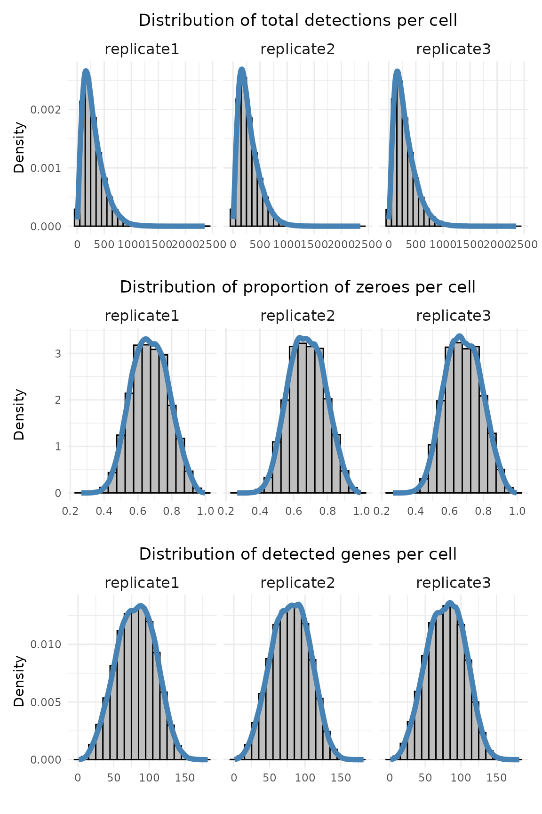
cm_new1=cm1
cm_new1[cm_new1==0] = NA
cm_new1 = as.data.frame(cm_new1)
cm_new1$avg2 = rowMeans(cm_new1,na.rm = TRUE)
summary(cm_new1$avg2) Min. 1st Qu. Median Mean 3rd Qu. Max.
1.21 2.00 2.59 3.09 3.69 15.73 cm_new2=cm2
cm_new2[cm_new2==0] = NA
cm_new2 = as.data.frame(cm_new2)
cm_new2$avg2 = rowMeans(cm_new2,na.rm = TRUE)
summary(cm_new2$avg2) Min. 1st Qu. Median Mean 3rd Qu. Max.
1.22 1.99 2.63 3.13 3.75 15.89 cm_new3=cm3
cm_new3[cm_new3==0] = NA
cm_new3 = as.data.frame(cm_new3)
cm_new3$avg2 = rowMeans(cm_new3,na.rm = TRUE)
summary(cm_new3$avg2) Min. 1st Qu. Median Mean 3rd Qu. Max.
1.24 2.01 2.66 3.18 3.81 16.16 avg_exp = as.data.frame(cbind("avg"=c(cm_new1$avg2, cm_new2$avg2, cm_new3$avg2),
"sample"=c(rep("replicate1", nrow(cm1)),
rep("replicate2", nrow(cm2)),
rep("replicate3", nrow(cm3)) )))
avg_exp$avg=as.numeric(avg_exp$avg)
avg_exp$sample = factor(avg_exp$sample,
levels = c("replicate1", "replicate2","replicate3"))
ggplot(data = avg_exp, aes(x = avg, color=sample)) +
geom_histogram(aes(y = after_stat(density)),
binwidth = 0.5, fill = "gray", color = "black") +
geom_density(color = "orange", linewidth = 1) +
facet_wrap(~sample)+
labs(title = "Distribution of average gene expression per cell",
x = " ", y = "Density") +
theme_minimal() +
theme(plot.title = element_text(hjust = 0.5),
strip.text = element_text(size=12))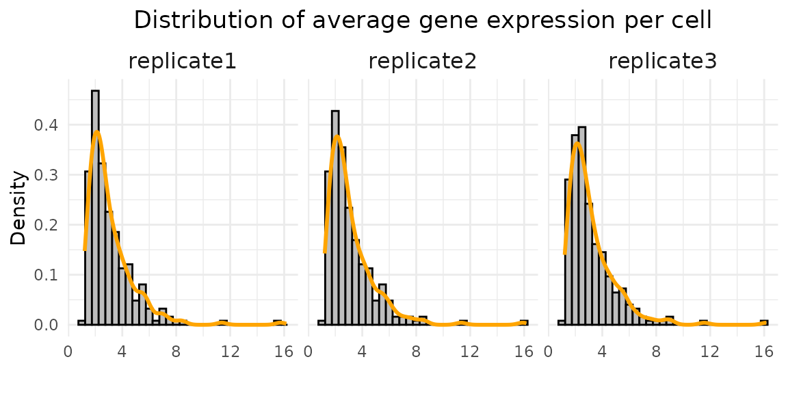
The three replicates show highly similar distributions. The median total detections per cell range from 250–253, and the median number of detected genes is around 80. The median proportion of zero counts is about 0.67–0.68. The average gene expression is about 2.59, 2.63, and 2.66 for replciate 1, 2 and 3.
Quality assessment of negative controls
Negative control probes
Negative control probes are non-targeting probes designed not to hybridize to any transcript. A total of 27 negative control probe targets were included in this dataset, with median total detections of approximately 1078, 831, and 779 for replicates 1, 2, and 3, respectively. There are no particular localised patterns for these probes.
probe_coords <- as.data.frame(rbind(cbind(sample="replicate1",rep1$trans_info[rep1$trans_info$feature_name %in% rep1$probe, c("feature_name","x","y")]),
cbind(sample="replicate2",rep2$trans_info[rep2$trans_info$feature_name %in% rep2$probe, c("feature_name","x","y")]),
cbind(sample="replicate3",rep3$trans_info[rep3$trans_info$feature_name %in% rep3$probe, c("feature_name","x","y")])
))
codeword_coords <- as.data.frame(rbind(cbind(sample="replicate1",rep1$trans_info[rep1$trans_info$feature_name %in% rep1$codeword, c("feature_name","x","y")]),
cbind(sample="replicate2",rep2$trans_info[rep2$trans_info$feature_name %in% rep2$codeword, c("feature_name","x","y")]),
cbind(sample="replicate3",rep3$trans_info[rep3$trans_info$feature_name %in% rep3$codeword, c("feature_name","x","y")])
))
ordered_feature = probe_coords %>% group_by(feature_name) %>% count() %>% arrange(desc(n))%>% pull(feature_name)
probe_tb = as.data.frame(probe_coords %>% group_by(sample, feature_name) %>% count())
colnames(probe_tb) = c("sample","feature_name","value_count")
probe_tb$feature_name = factor(probe_tb$feature_name, levels= ordered_feature)
probe_tb = probe_tb[order(probe_tb$feature_name), ]
ggplot(probe_tb, aes(x = feature_name, y = value_count)) +
geom_bar(stat = "identity", position = position_dodge()) +
facet_wrap(~sample, ncol=1, scales = "free_y")+
labs(title = " ", x = " ", y = "Number of total detections") +
theme_bw()+
theme(legend.position = "none",
axis.text.x= element_text(size=8, angle=45,vjust=1,hjust = 1),
axis.text.y=element_text(size=10),
axis.ticks=element_blank(),
strip.text = element_text(size=12),
axis.title.y = element_text(size=12),
axis.title.x=element_blank(),
strip.background = element_rect(fill="white", colour ="black"),
panel.background=element_blank(),
panel.grid.minor=element_blank(),
plot.background=element_blank())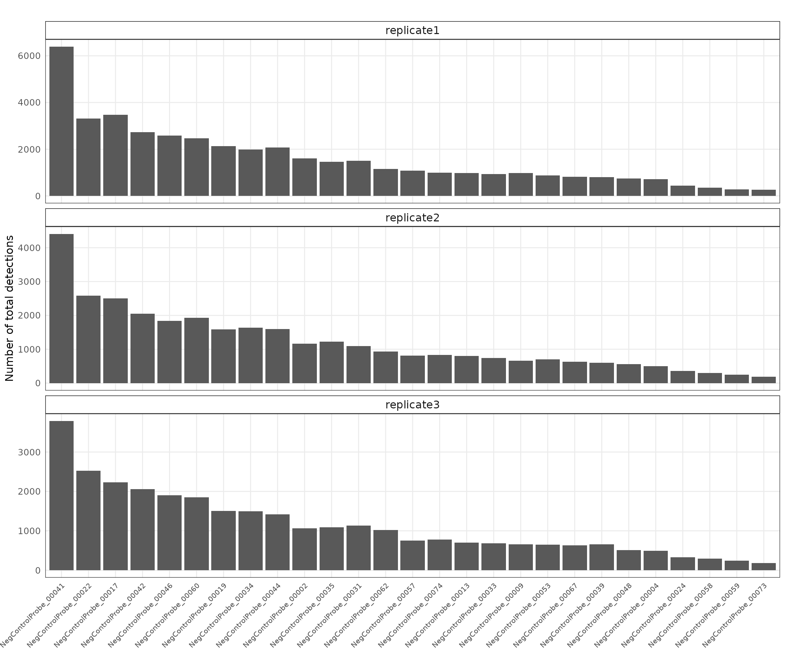
p1<-ggplot(probe_coords, aes(x = x, y = y)) +
geom_hex(bins = auto_hex_bin(min(table(probe_coords$sample)),
target_points_per_bin = 1)) +
theme_bw() +
scale_fill_gradient(low = "white", high = "black") +
guides(fill = guide_colorbar(barheight = unit(0.06, "npc"),
barwidth = unit(0.4, "npc"),
)) +
scale_x_reverse()+
facet_grid(~sample) +
defined_theme +
theme(legend.title = element_text(size = 10,
hjust = 1, vjust=0.8),
legend.position = "bottom",
aspect.ratio = 7/10,
legend.text = element_text(size = 9),
strip.text = element_blank(),
strip.background = element_blank())
p1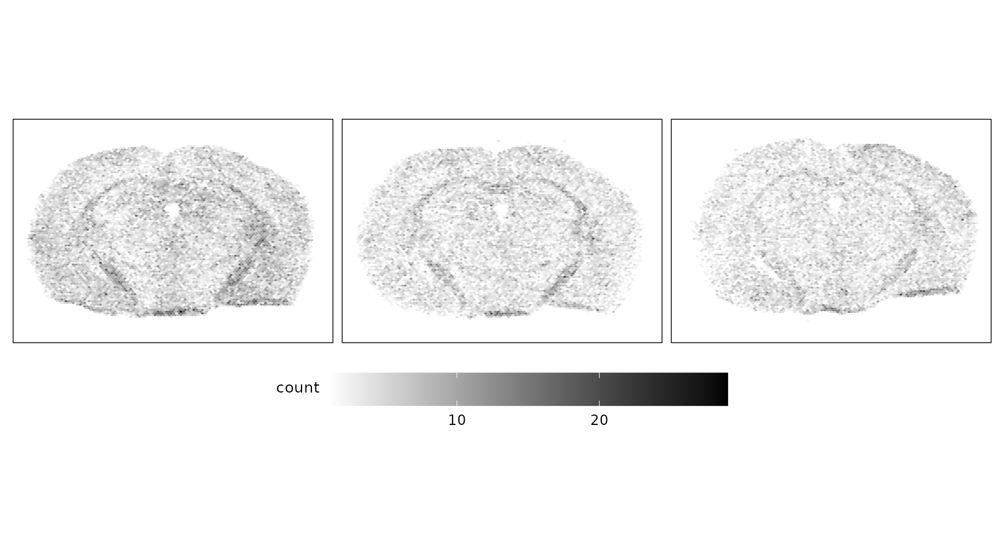
Negative control codewords
Negative control codewords are unused barcode sequences included to detect random or erroneous decoding events, providing a measure of decoding noise. There are 41 codeword targets used in this dataset, and the overall detection profiles were consistent across the three replicates. The median total detections per codeword ranged from approximately 40 to 65, with replicate 1 showing slightly lower counts and replicate 3 showing the highest overall detection levels. The codewords appear randomly distributed across the tissue sections.
codeword_coords <- as.data.frame(rbind(cbind(sample="replicate1",
rep1$trans_info[rep1$trans_info$feature_name %in% rep1$codeword, c("feature_name","x","y")]),
cbind(sample="replicate2",rep2$trans_info[rep2$trans_info$feature_name %in% rep2$codeword, c("feature_name","x","y")]),
cbind(sample="replicate3",rep3$trans_info[rep3$trans_info$feature_name %in% rep3$codeword, c("feature_name","x","y")])
))
ordered_feature = codeword_coords %>% group_by(feature_name) %>% count() %>% arrange(desc(n))%>% pull(feature_name)
codeword_tb = as.data.frame(codeword_coords %>% group_by(sample, feature_name) %>% count())
colnames(codeword_tb) = c("sample","feature_name","value_count")
codeword_tb$feature_name = factor(codeword_tb$feature_name, levels= ordered_feature)
codeword_tb = codeword_tb[order(codeword_tb$feature_name), ]
ggplot(codeword_tb, aes(x = feature_name, y = value_count)) +
geom_bar(stat = "identity", position = position_dodge()) +
facet_wrap(~sample, ncol=1, scales = "free_y")+
labs(title = " ", x = " ", y = "Number of total detections") +
theme_bw()+
theme(legend.position = "none",
axis.text.x= element_text(size=8, angle=45,vjust=1,hjust = 1),
axis.text.y=element_text(size=10),
axis.ticks=element_blank(),
strip.text = element_text(size=12),
axis.title.y = element_text(size=12),
axis.title.x=element_blank(),
strip.background = element_rect(fill="white", colour ="black"),
panel.background=element_blank(),
panel.grid.minor=element_blank(),
plot.background=element_blank())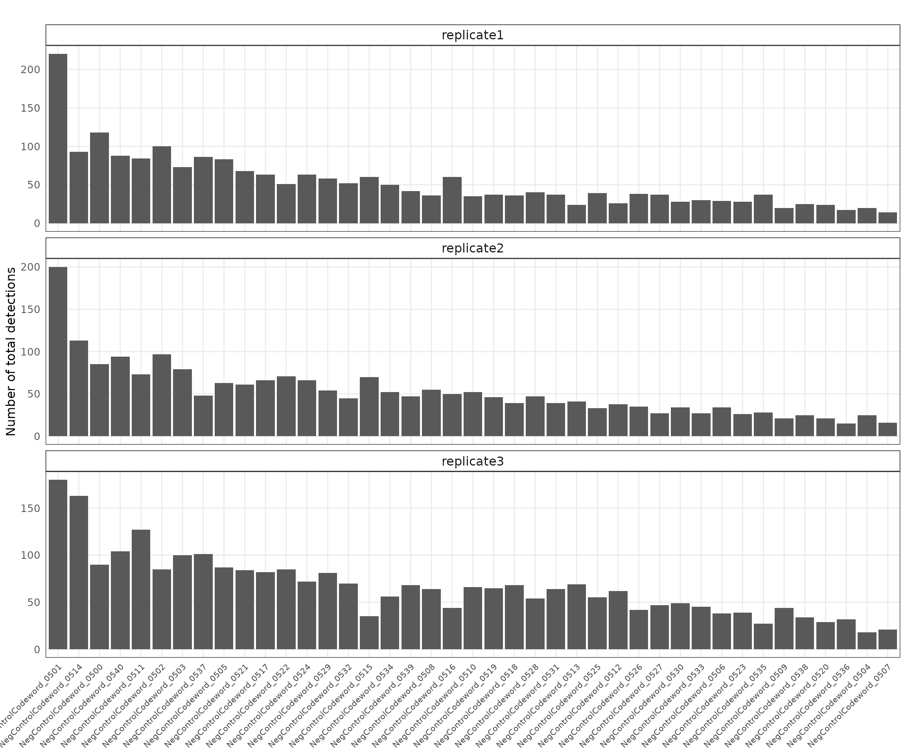
p2<- ggplot(codeword_coords, aes(x = x, y = y)) +
geom_hex(bins = auto_hex_bin(min(table(probe_coords$sample)),
target_points_per_bin = 1)) +
theme_bw() +
scale_fill_gradient(low = "white", high = "black") +
guides(fill = guide_colorbar(barheight = unit(0.06, "npc"),
barwidth = unit(0.4, "npc"),
)) +
scale_x_reverse()+
facet_grid(~sample) +
defined_theme +
theme(legend.title = element_text(size = 10, hjust = 1, vjust=0.8),
legend.position = "bottom",
aspect.ratio = 7/10,
legend.text = element_text(size = 9),
strip.text = element_blank(),
strip.background = element_blank())
p2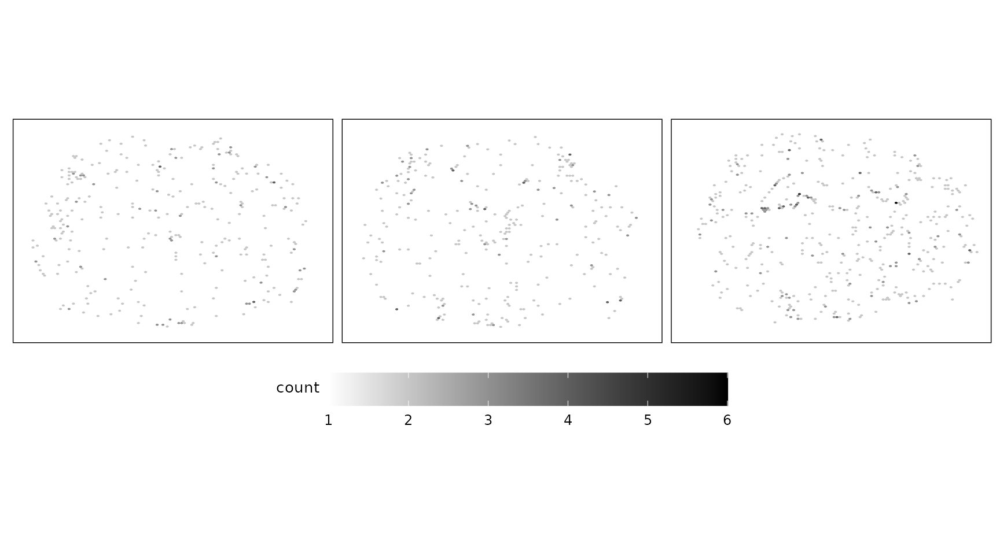
Banksy clustering
We combined the three replicates into a single SpatialExperiment object after assigning unique cell IDs and log-normalizing the data through Seurat. BANKSY was then run with λ = 0.2 and k_geom = 15, using adaptive geometric features to capture local spatial context. We performed dimensional reduction (PCA and UMAP) and clustered the data at resolutions 0.1. The resulting clusters were merged across samples to obtain consistent labels for marker detection and annotation.
# List of source directories
sps <- c("1", "2", "3")
spe_list <- lapply(sps, function(id) {
rp = get(paste0("rep", id))
cell_info <-rp$cell_info
cell_info$cells = paste0("r", id, "-",cell_info$cell_id)
cm <-get(paste0("cm", id))
# Subset and rename cells
sub_info <- cell_info[, c("x_centroid", "y_centroid", "cells")]
colnames(sub_info) = c("x", "y", "cells")
rownames(sub_info) <- sub_info$cells
sub_info = sub_info[colnames(cm),]
coords <- as.matrix(sub_info[, c("x", "y")])
# Construct SpatialExperiment
SpatialExperiment(
assays = list(counts = cm),
spatialCoords = coords,
sample_id = paste0("replicate",as.character(id))
)
})
se <- do.call(cbind, spe_list)
# Convert to Seurat and normalize
seu <- as.Seurat(se, data = NULL)
seu <- NormalizeData(seu, normalization.method = "LogNormalize")
seu <- FindVariableFeatures(seu, nfeatures = nrow(seu))
# Back to SpatialExperiment
aname <- "logcounts"
# assay(se, aname) <- GetAssayData(seu)
logcounts_mat <- GetAssayData(seu, slot = "data")[, colnames(se)]
assay(se, "logcounts", withDimnames = FALSE) <- logcounts_mat
# Re-split by sample
spe_list <- split(seq_len(ncol(se)), se$sample_id) |>
lapply(function(cols) se[, cols])
lambda <- c(0.2)
k_geom <- 15
use_agf <- TRUE
compute_agf <- TRUE
spe_list <- lapply(spe_list, computeBanksy, assay_name = aname,
compute_agf = compute_agf, k_geom = k_geom)
spe_joint <- do.call(cbind, spe_list)
spe_joint <- runBanksyPCA(spe_joint, use_agf = use_agf,
lambda = lambda, group = "sample_id", seed = 1000)
spe_joint <- runBanksyUMAP(spe_joint, use_agf = use_agf,
lambda = lambda, seed = 1000)
cat("Clustering starts\n")
spe_joint <- clusterBanksy(spe_joint, use_agf = use_agf, lambda = lambda,
resolution = c(0.1, 0.5), seed = 1000)
spe_joint <- connectClusters(spe_joint)
cluster_info <- data.frame(
x = spatialCoords(spe_joint)[, 1],
y = spatialCoords(spe_joint)[, 2],
cell_id = colnames(spe_joint),
cluster = paste0("c", colData(spe_joint)$clust_M1_lam0.2_k50_res0.1),
sample = colData(spe_joint)$sample_id
)
saveRDS(seu, here(gdata,paste0(data_nm, "_seu.Rds")))
saveRDS(spe_joint, here(gdata,paste0(data_nm, "_se.Rds")))
saveRDS(cluster_info, here(gdata,paste0(data_nm, "_clusters.Rds")))# load generated data (see code above for how they were created)
cluster_info = readRDS(here(gdata,paste0(data_nm, "_clusters.Rds")))
cluster_names = paste0("c",1:9)
fig_ratio = cluster_info %>%
group_by(sample) %>%
summarise(
x_range = diff(range(x, na.rm = TRUE)),
y_range = diff(range(y, na.rm = TRUE)),
ratio = y_range / x_range,
.groups = "drop"
) %>% summarise(max_ratio = max(ratio)) %>% pull(max_ratio)
seu = readRDS(here(gdata,paste0(data_nm, "_seu.Rds")))
se = readRDS(here(gdata,paste0(data_nm, "_se.Rds")))
Idents(seu)=cluster_info$cluster[match(colnames(seu), cluster_info$cell_id)]
Idents(seu) = factor(Idents(seu), levels = cluster_names)
seu$sample = cluster_info$sample[match(colnames(seu), cluster_info$cell_id)]There are 162,033, 154,654, and 158,047 cells in replicates 1, 2, and 3 respectively. The relative cluster proportions are consistent across all three replicates. Clusters c1, c2, and c3 are the largest, together accounting for over 70% of all cells in each replicate. In contrast, smaller clusters such as c8 and c9 contian only around 1.2%-1.5% of total cells.
sum_df = cluster_info[,c("cluster", "cell_id","sample"),drop=FALSE] %>%
group_by(cluster, sample) %>% dplyr::count()
ggplot(sum_df, aes(x = cluster, y = n, fill=sample)) +
geom_bar(stat="identity", position=position_dodge()) +
scale_y_continuous(expand = c(0,10), limits = c(0, 1.1*max(sum_df$n)))+
labs(title = " ", x = "cluster", y = "number of cells", fill=" ") +
theme_bw()+
theme(legend.position = "top",
axis.text= element_text(size=12),
axis.title.y = element_text(size=12),
axis.title.x = element_blank(),
legend.text = element_text(size=12),
strip.text = element_text(size = rel(1))
)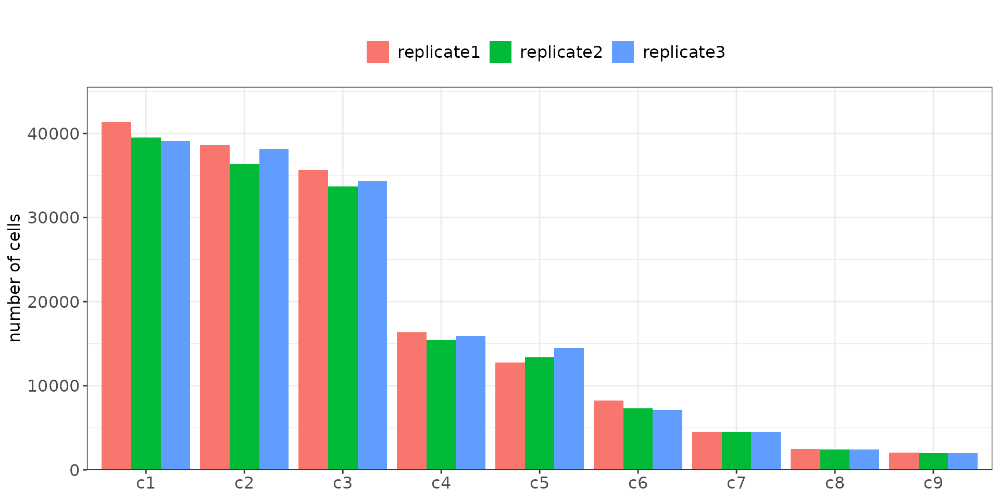
Cluster visualisation
Whole-sample view of every mouse brain replicate, colored by cluster. The tissue architecture is well preserved, with major brain structures clearly visible.
p1<- ggplot(data = cluster_info,aes(x = x, y = y, color=cluster))+
geom_point(size=0.001, alpha=0.4)+
facet_wrap(~sample, ncol=3)+
scale_x_reverse()+
theme_classic()+
guides(color=guide_legend(title="", nrow = 1,
override.aes=list(alpha=1, size=4)))+
defined_theme + theme(aspect.ratio = fig_ratio,,
legend.position = "top",
legend.text = element_text(size=15),
strip.background = element_blank(),
strip.text = element_text(size = rel(1.2)))
p1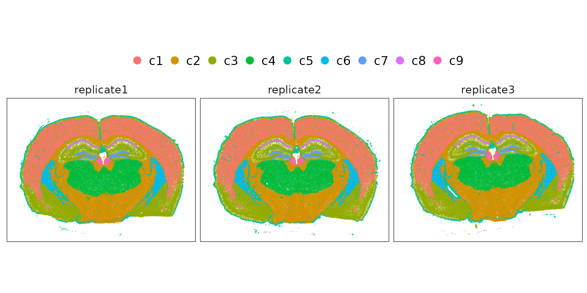
Cluster-specific views showing that most clusters are spatially separable.
p1<- ggplot(data = cluster_info[cluster_info$sample=="replicate1", ],
aes(x = x, y = y, color=cluster))+
geom_point(size=0.001)+
facet_wrap(~cluster, ncol=5)+
scale_x_reverse()+
scale_color_manual(values = my_colors)+
theme_minimal()+
defined_theme+
labs(title = "Mouse brain replicate1")+
theme(aspect.ratio = fig_ratio,
plot.title = element_text(size = rel(1.6),hjust = 0),
strip.text = element_text(size = rel(1.2)))
p2<- ggplot(data = cluster_info[cluster_info$sample=="replicate2", ],
aes(x = x, y = y, color=cluster))+
geom_point(size=0.001)+
facet_wrap(~cluster, ncol=5)+
scale_x_reverse()+
scale_color_manual(values = my_colors)+
theme_minimal()+
defined_theme+
labs(title = "Mouse brain replicate2")+
theme(aspect.ratio =fig_ratio,
plot.title = element_text(size = rel(1.6),hjust = 0),
strip.text = element_text(size = rel(1.2)))
p3<- ggplot(data = cluster_info[cluster_info$sample=="replicate3", ],
aes(x = x, y = y, color=cluster))+
geom_point(size=0.001)+
facet_wrap(~cluster, ncol=5)+
scale_x_reverse()+
scale_color_manual(values = my_colors)+
theme_minimal()+
defined_theme+
labs(title = "Mouse brain replicate3")+
theme(aspect.ratio =fig_ratio,
plot.title = element_text(size = rel(1.6), hjust = 0),
strip.text = element_text(size = rel(1.2)))
layout_design <- p1 / p2 / p3
layout_design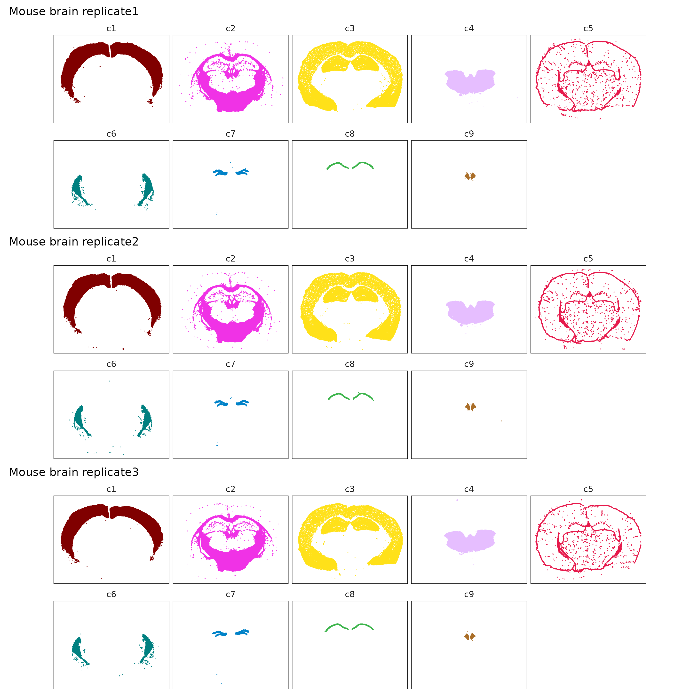
Detect marker genes
jazzPanda
We applied jazzPanda to this dataset using the linear modelling approach to detect spatially enriched marker genes across clusters. The dataset was converted into spatial gene and cluster vectors using a 50 × 50 square binning strategy. Transcript detections for the negative control probes and codewords targets were included as the background control. For each gene, a linear model was fitted to estimate its spatial association with relevant cell type patterns.
all_genes =row.names(rep1$cm)
grid_length=50
# get spatial vectors
all_vectors = get_vectors(x= list("replicate1" = rep1$trans_info,
"replicate2" = rep2$trans_info,
"replicate3" = rep3$trans_info),
sample_names=c("replicate1","replicate2","replicate3"),
cluster_info = cluster_info, bin_type="square",
bin_param=c(grid_length,grid_length),
test_genes = all_genes ,
n_cores = 5)
nc_vectors = create_genesets(x=list("replicate1" = rep1$trans_info,
"replicate2" = rep2$trans_info,
"replicate3" = rep3$trans_info),
sample_names=c("replicate1","replicate2","replicate3"),
name_lst=list(probe=rep1$probe,
codeword=rep1$codeword),
bin_type="square",
bin_param=c(grid_length,grid_length),
cluster_info = NULL)
})
set.seed(188)
jazzPanda_res_lst = lasso_markers(gene_mt=all_vectors$gene_mt,
cluster_mt = all_vectors$cluster_mt,
sample_names=c("replicate1","replicate2","replicate3"),
keep_positive=TRUE,
background=nc_vectors)
saveRDS(all_vectors, here(gdata,paste0(data_nm, "_sq50_vector_lst.Rds")))
saveRDS(jazzPanda_res_lst, here(gdata,paste0(data_nm, "_jazzPanda_res_lst.Rds")))# load generated data (see code above for how they were created)
jazzPanda_res_lst = readRDS(here(gdata,paste0(data_nm, "_jazzPanda_res_lst.Rds")))
nbins = 2500
sv_lst = readRDS(here(gdata,paste0(data_nm, "_sq50_vector_lst.Rds")))
jazzPanda_res = get_top_mg(jazzPanda_res_lst, coef_cutoff=0.1)
jazzPanda_summary = as.data.frame(table(jazzPanda_res$top_cluster))
colnames(jazzPanda_summary) = c("cluster","jazzPanda_glm")This dotplot shows the top 10 marker genes per cluster identified using the linear modelling approach. Some clusters (such as c7 and c9) display relatively distinct marker profiles with strong and specific expression signals. In contrast, clusters like c3 show some overlap in gene expression, with markers moderately expressed across multiple clusters rather than being cluster-restricted.
glm_mg = jazzPanda_res[jazzPanda_res$top_cluster != "NoSig", ]
glm_mg$top_cluster = factor(glm_mg$top_cluster, levels = cluster_names)
top_mg_glm <- glm_mg %>%
group_by(top_cluster) %>%
arrange(desc(glm_coef), .by_group = TRUE) %>%
slice_max(order_by = glm_coef, n = 10) %>%
select(top_cluster, gene, glm_coef)
p1<-DotPlot(seu, features = top_mg_glm$gene) +
scale_colour_gradient(low = "white", high = "red") +
coord_flip()+
theme(axis.text.x = element_text(angle = 45, hjust = 1, vjust = 1))+
labs(title = "Top 10 marker genes (jazzPanda-glm)", x="", y="")
p1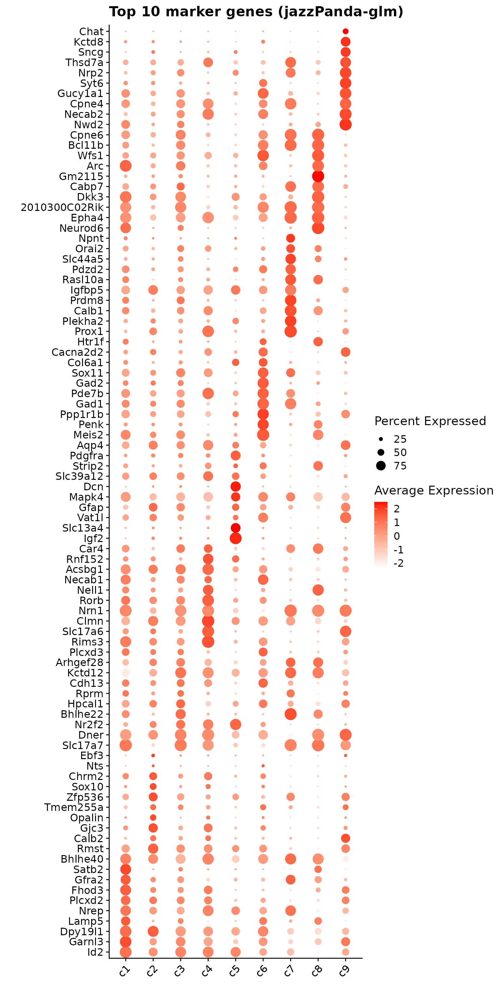
Cluster to cluster correlation
We computed pairwise Spearman correlations between spatial cluster vectors to assess relationships among clusters for every replicate. Overall, the pairwise correlations are generally low, indicating that most clusters occupy distinct spatial regions. The highest correlations (≈0.45–0.47) are observed between clusters c1 and c3, which show partially overlapping spatial patterns.
for (curr_sp in c("replicate1", "replicate2", "replicate3")){
cluster_mtt <- sv_lst$cluster_mt[sv_lst$cluster_mt[, curr_sp] == 1, ]
cluster_mtt <- cluster_mtt[, cluster_names]
cor_M_cluster <- cor(cluster_mtt, cluster_mtt, method = "spearman")
col <- colorRampPalette(c("#4477AA", "#77AADD", "#FFFFFF",
"#EE9988", "#BB4444"))
corrplot(cor_M_cluster,
method = "color",
col = col(200),
diag = TRUE,
addCoef.col = "black",
type = "upper",
tl.col = "black",
tl.cex = 1,
number.cex = 0.8,
tl.srt = 0,
mar = c(0, 0, 3, 0),
sig.level = 0.05,
insig = "blank")
title(paste(curr_sp, "cluster–cluster correlation"),
line = 1,
cex.main = 1.2)
}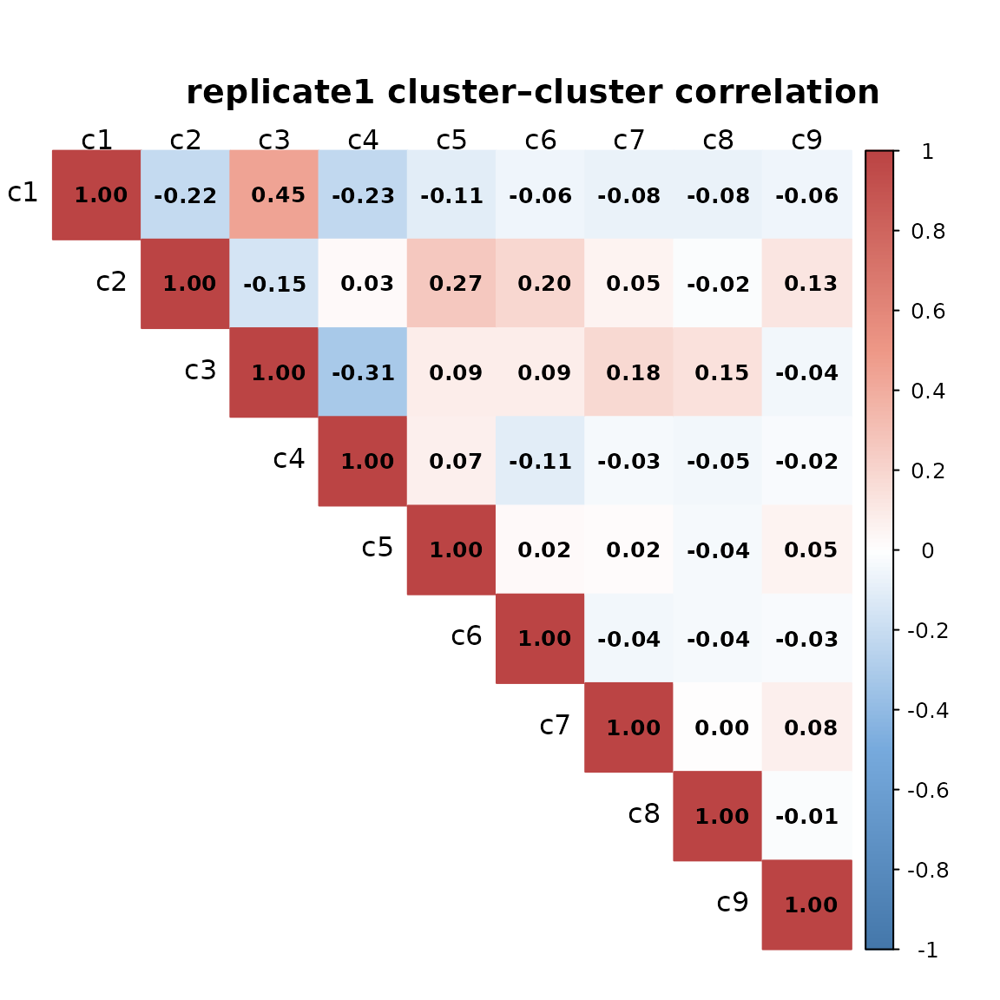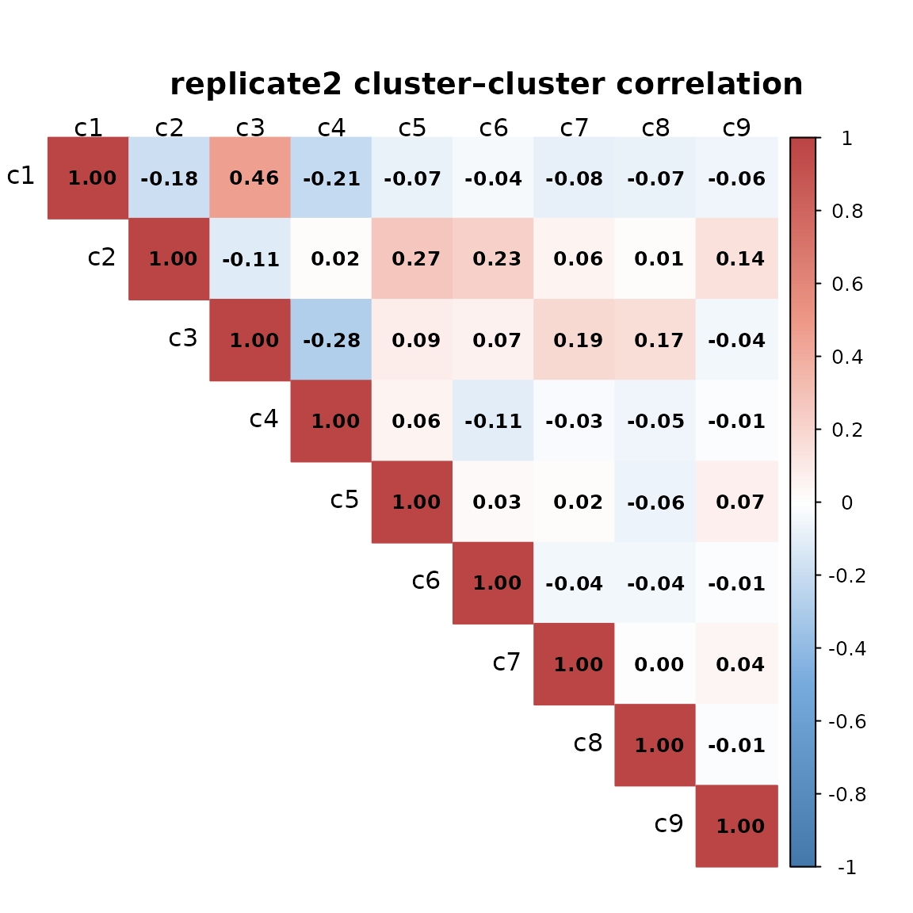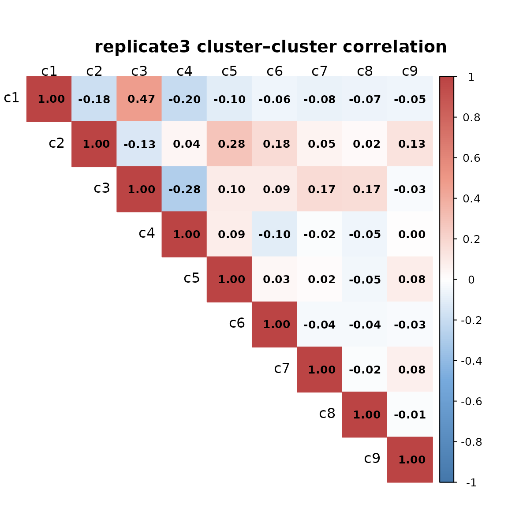
# Combine into a new dataframe for LaTeX output
output_data <- do.call(rbind, lapply(cluster_names, function(cl) {
subset <- jazzPanda_res[jazzPanda_res$top_cluster == cl, ]
sorted_subset <- subset[order(-subset$glm_coef), ]
gene_list <- paste(sorted_subset$gene, "(", round(sorted_subset$glm_coef, 2), ")", sep="", collapse=", ")
return(data.frame(Cluster = cl, Genes = gene_list))
}))
latex_table <- xtable(output_data, caption="Detected marker genes for each cluster by jazzPanda, in decreasing value of glm coefficients")
print.xtable(latex_table, include.rownames = FALSE, hline.after = c(-1, 0, nrow(output_data)), comment = FALSE)\begin{table}[ht]
\centering
\begin{tabular}{ll}
\hline
Cluster & Genes \\
\hline
c1 & Id2(7.78), Garnl3(7.63), Dpy19l1(7.18), Lamp5(6.47), Nrep(5.23), Plcxd2(4.59), Fhod3(4.5), Gfra2(4.31), Satb2(4.28), Bhlhe40(4.14), Kcnh5(4.12), Rasgrf2(3.51), Cux2(3.31), Tmem132d(3.18), Tle4(3.08), Pvalb(2.98), Hs3st2(2.35), Grik3(2.34), Neto2(2.29), Nxph3(2.24), Gng12(2.1), Slit2(2.07), Igfbp6(1.99), Rab3b(1.91), Pdzrn3(1.75), Myl4(1.7), Fezf2(1.69), Syndig1(1.64), Igsf21(1.51), Ndst3(1.47), Sema3a(1.38), Cdh6(1.37), Myo16(1.27), Gsg1l(1.26), Cntnap4(1.22), Lypd6(1.11), Gadd45a(1.06), Syt2(1.06), Cplx3(0.98), Galnt14(0.97), Rspo1(0.95), Ccn2(0.94), Prr16(0.92), Cbln4(0.87), Arhgap25(0.86), Rxfp1(0.73), Col19a1(0.73), Rbp4(0.62), Rspo2(0.55), Laptm5(0.54), Fos(0.46), Sema5b(0.43), Vip(0.43), Trem2(0.42), Siglech(0.39), Cwh43(0.35), Kcnmb2(0.33), Trbc2(0.31), Gm19410(0.29), Sla(0.28), Cort(0.27), Gli3(0.26), Sst(0.26), Crh(0.21) \\
c2 & Rmst(5.92), Calb2(4.49), Gjc3(4.06), Opalin(2.34), Tmem255a(2.12), Zfp536(1.89), Sox10(1.88), Chrm2(1.23), Nts(1.15), Ebf3(1.07), Adamts2(0.61), Gpr17(0.43), Stard5(0.36), Sema3d(0.31), Chodl(0.22) \\
c3 & Slc17a7(21.79), Dner(13.69), Nr2f2(7.96), Bhlhe22(7.25), Hpcal1(5.23), Rprm(4.15), Cdh13(4.12), Kctd12(3.99), Arhgef28(2.83), Plcxd3(2.79), Cdh4(2.28), Bdnf(2), Cdh9(1.66), Parm1(1.52), Dpyd(1.33), Npy2r(1.29), Syt17(1.28), Zfpm2(1.26), Pde11a(0.98), Ndst4(0.92), Hapln1(0.64), Pcsk5(0.58), Angpt1(0.56), Cspg4(0.48), Prss35(0.21) \\
c4 & Rims3(17.98), Slc17a6(17.67), Clmn(15.71), Nrn1(13.7), Rorb(6.91), Nell1(6.48), Necab1(6.42), Acsbg1(5.48), Rnf152(5.36), Car4(5.13), Tanc1(4.81), Tmem163(4.78), Sema6a(4.4), Ntsr2(3.85), Foxp2(3.76), Inpp4b(2.77), Unc13c(2.55), Opn3(2.25), Btbd11(2.13), Cntn6(1.95), Sdk2(1.75), Tox(1.7), Cdh20(1.67), Ly6a(1.51), Fign(1.42), Plch1(1.29), Cntnap5b(1.07), Vwc2l(0.99), Rfx4(0.97), Cbln1(0.94), Cldn5(0.87), Igf1(0.74), Adgrl4(0.66), Deptor(0.59), Pkib(0.39), Pglyrp1(0.33), Nostrin(0.19), Zfp366(0.13) \\
c5 & Igf2(20.4), Slc13a4(9.35), Vat1l(8.41), Gfap(6.1), Mapk4(5.54), Dcn(5.36), Slc39a12(4.66), Strip2(4.13), Pdgfra(3.45), Aqp4(2.87), Fn1(2.72), Cobll1(2.63), Cd24a(2.55), Aldh1a2(2.54), Fmod(2.54), Col1a1(2.41), Acta2(2.28), Spag16(2.18), Lyz2(2.08), Spp1(1.93), Kdr(1.86), Hat1(1.77), Gjb2(1.61), Sntb1(1.31), Paqr5(1.2), Cyp1b1(1.19), Pecam1(1.08), Adamtsl1(1.04), Mecom(0.96), Emcn(0.86), Acvrl1(0.72), Trp73(0.62), Cd93(0.62), Carmn(0.6), Prph(0.59), Eya4(0.43), Pln(0.37), Cd68(0.34), Cd53(0.33), Cd44(0.32), Fgd5(0.3), Sox17(0.23), Slfn5(0.23), Pthlh(0.21) \\
c6 & Meis2(12.44), Penk(11.51), Ppp1r1b(10.21), Gad1(7.38), Pde7b(5.67), Gad2(5.64), Sox11(3.4), Col6a1(3.36), Cacna2d2(2.31), Htr1f(1.77), Pdyn(1.69), Arhgap6(1.05) \\
c7 & Prox1(10.76), Plekha2(4.82), Calb1(4.73), Prdm8(4.02), Igfbp5(3.58), Rasl10a(3.05), Pdzd2(2.44), Slc44a5(2.37), Orai2(1.52), Npnt(1.45) \\
c8 & Neurod6(20.59), Epha4(17.96), 2010300C02Rik(14.76), Dkk3(12.47), Cabp7(10.94), Gm2115(9.87), Arc(8.95), Wfs1(8.56), Bcl11b(8.27), Cpne6(8.26), Sipa1l3(7.74), Pou3f1(7.56), Igfbp4(6.83), Sema3e(6.53), Arhgap12(6.25), Pip5k1b(6), Trpc4(4), Fibcd1(3.98), Sorcs3(3.89), Mdga1(3.49), Shisa6(3.35), Cpne8(3.07), Ror1(0.83) \\
c9 & Nwd2(19.13), Necab2(10.2), Cpne4(8.47), Gucy1a1(7.32), Syt6(6.99), Nrp2(6.24), Thsd7a(4.39), Sncg(2.87), Kctd8(2.57), Chat(1.59), Ano1(1.22), Tacr1(1.05) \\
\hline
\end{tabular}
\caption{Detected marker genes for each cluster by jazzPanda, in decreasing value of glm coefficients}
\end{table}Top3 marker genes by jazzPanda_glm
We visualized the top three marker genes identified by the linear modelling approach for each cluster. For each selected gene, its spatial transcript locations were plotted alongside the corresponding cluster map. Across clusters, the spatial expression patterns of marker genes closely match the distribution of their associated cluster.
x_range <- c(0, 11000)
y_range <- c(0, 7500)
plot_lst=list()
for (cl in cluster_names){
inters=jazzPanda_res[jazzPanda_res$top_cluster==cl,"gene"]
rounded_val=signif(as.numeric(jazzPanda_res[inters,"glm_coef"]),
digits = 3)
inters_df = as.data.frame(cbind(gene=inters, value=rounded_val))
inters_df$value = as.numeric(inters_df$value)
inters_df=inters_df[order(inters_df$value, decreasing = TRUE),]
inters_df$text= paste(inters_df$gene,inters_df$value,sep=": ")
if (length(inters > 0)){
inters_df = inters_df[1:min(3, nrow(inters_df)),]
inters = inters_df$gene
all_trans = as.data.frame(matrix(0, ncol=6))
colnames(all_trans) = c("x","y", "feature_name","value","text_label","sample")
for (rp in c("rep1","rep2","rep3")){
rp_lst = get(rp)
iters_sp1= rp_lst$trans_info$feature_name %in% inters
vis_r1 =rp_lst$trans_info[iters_sp1,
c("x","y","feature_name")]
vis_r1$value = inters_df[match(vis_r1$feature_name,inters_df$gene),
"value"]
vis_r1=vis_r1[order(vis_r1$value,decreasing = TRUE),]
vis_r1$text_label= paste(vis_r1$feature_name,
vis_r1$value,sep=": ")
vis_r1$text_label=factor(vis_r1$text_label, levels=inters_df$text)
vis_r1$sample=paste("replicate", substr(rp,start = 4, stop=4),sep="")
all_trans = rbind(all_trans,vis_r1)
}
all_trans = all_trans[2:nrow(all_trans),]
all_trans$text_label = factor(all_trans$text_label,
levels = inters_df$text)
all_trans = all_trans[order(all_trans$text_label),]
genes_plt<- ggplot(data = all_trans,
aes(x = x, y = y))+
geom_hex(bins = auto_hex_bin(max(table(all_trans$sample,
all_trans$feature_name))))+
facet_grid(sample~text_label)+
scale_x_reverse() +
scale_fill_gradient(low="grey90", high="maroon4") +
# scale_fill_viridis_c(option = "turbo")+
guides(fill = guide_colorbar(barheight = unit(0.2, "npc"),
barwidth = unit(0.02, "npc")))+
defined_theme+
theme(legend.position = "right",
strip.background = element_rect(fill =NA,colour = NA),
strip.text = element_text(size = rel(1.3)),
strip.text.y.right = element_blank(),
legend.key.width = unit(2, "cm"),
aspect.ratio = fig_ratio,
legend.title = element_text(size = 10),
legend.text = element_text(size = 10),
legend.key.height = unit(2, "cm"))
cluster_data = cluster_info[cluster_info$cluster==cl, ]
cluster_data$label = paste(cluster_data$sample, cluster_data$cluster, sep="-")
cluster_data$label =factor(cluster_data$label,
levels=paste(paste("replicate",1:3,sep=""),
cl,sep="-"))
p_cl<- ggplot(data =cluster_data,
aes(x = x, y = y, color=sample))+
geom_point(size=0.01)+
facet_wrap(~label, nrow=3,strip.position = "left")+
scale_x_reverse(limits = rev(x_range)) + # enforce global x
scale_y_continuous(limits = y_range) + # enforce global y
scale_color_manual(values = c("black","black","black"))+
defined_theme +
theme(legend.position = "none",
strip.background = element_blank(),
aspect.ratio = fig_ratio,
legend.key.width = unit(15, "cm"),
strip.text = element_text(size = rel(1.2)))
lyt <-p_cl | genes_plt
layout_design <- lyt + patchwork::plot_layout(heights = c(1,1),
widths = c(1, 3))
print(layout_design)
}
}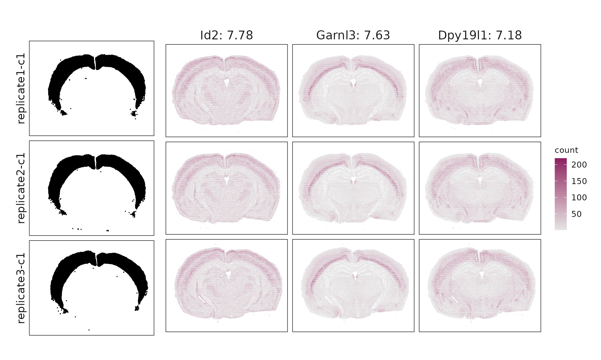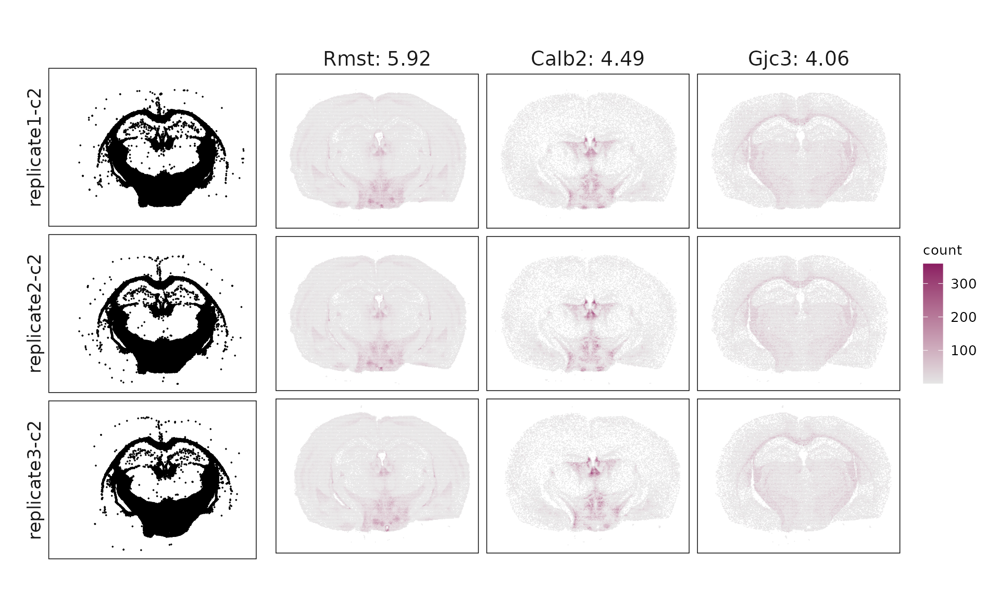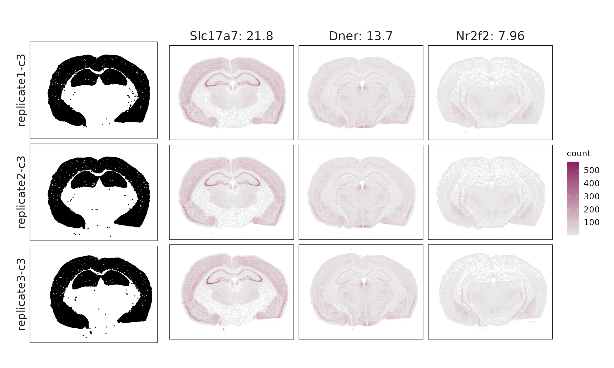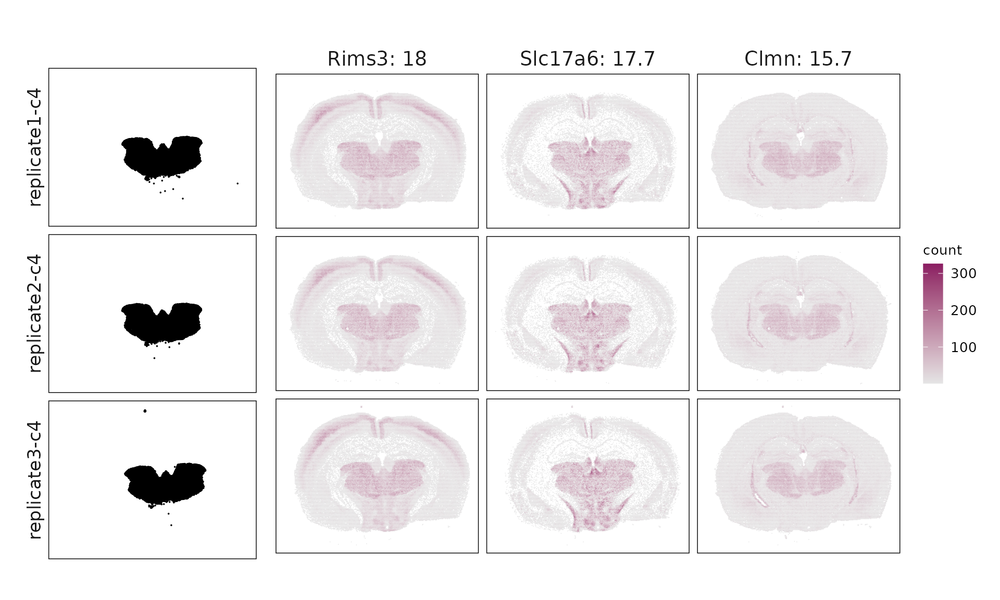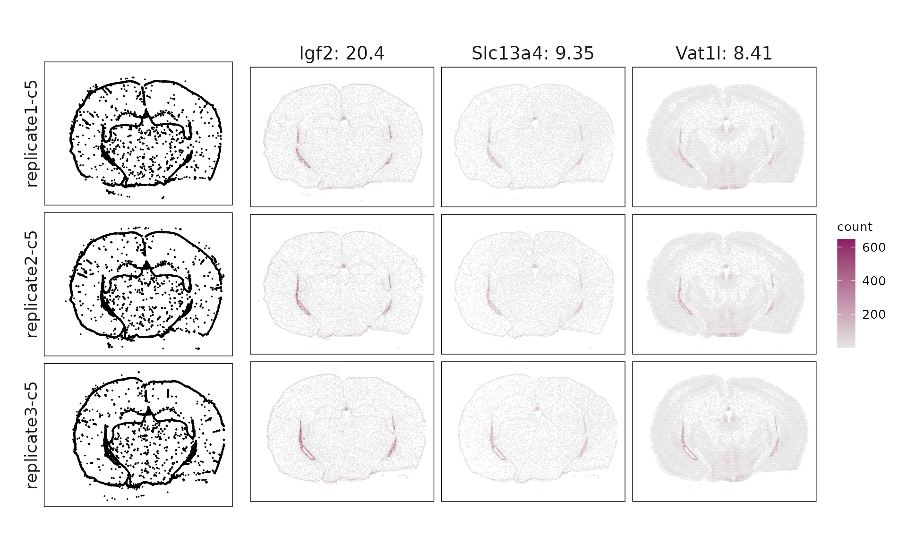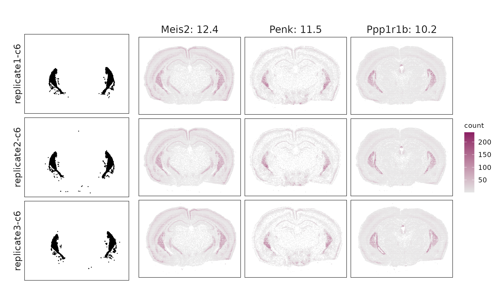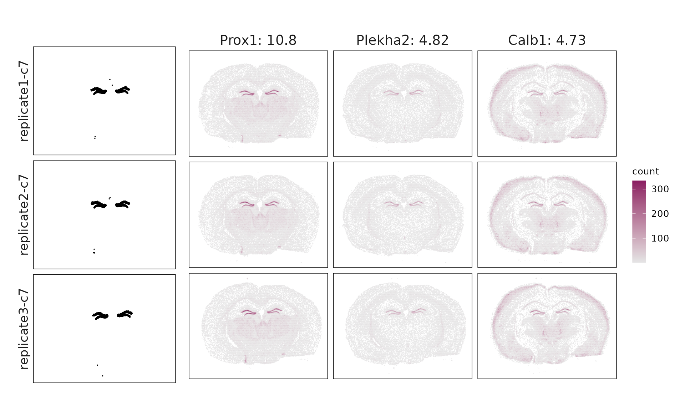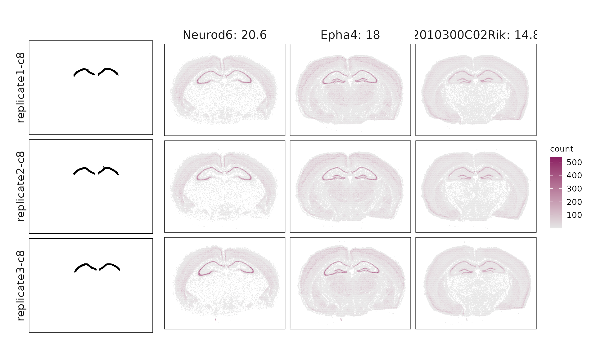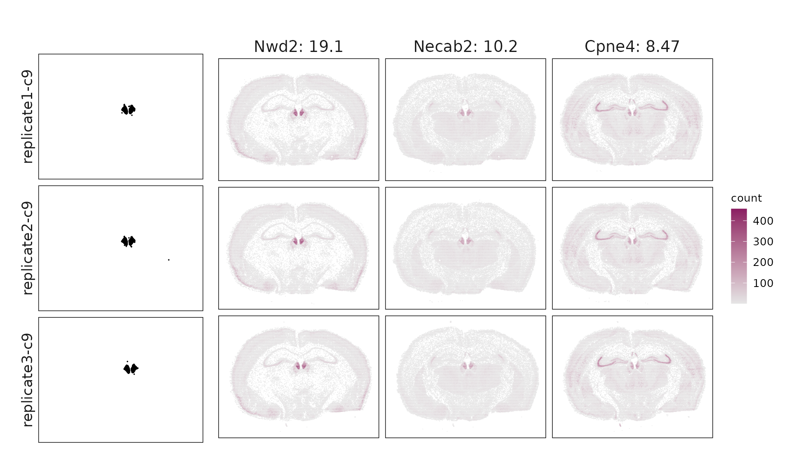
Cluster vector versus marker gene vector
We visualized the top three marker genes for each cluster by plotting their spatial gene vectors against the corresponding cluster vector. Each scatter plot shows how strongly each marker gene’s spatial pattern aligns with the overall spatial signal of its cluster, allowing assessment of both marker specificity and coherence with spatial domains.
For all clusters, marker genes show a strong positive trend with the corresponding cluster vector, confirming that their expression is spatially aligned with the inferred cluster domain.
plot_lst=list()
for (cl in cluster_names){
inters_df=jazzPanda_res[jazzPanda_res$top_cluster==cl,]
inters_df=inters_df[order(inters_df$glm_coef, decreasing = TRUE),]
inters_df = inters_df[1:min(3, nrow(inters_df)),]
mk_genes = inters_df$gene
dff = as.data.frame(cbind(sv_lst$cluster_mt[,cl],
sv_lst$gene_mt[,mk_genes]))
colnames(dff) = c("cluster", mk_genes)
dff$sample= "replicate1"
dff[nbins:(nbins*2),"sample"] = "replicate2"
dff[(nbins*2):(nbins*3),"sample"] = "replicate3"
dff$vector_id = c(1:nbins, 1:nbins, 1:nbins)
long_df <- dff %>%
tidyr::pivot_longer(cols = -c(cluster, sample, vector_id),
names_to = "gene",
values_to = "vector_count")
long_df$gene = factor(long_df$gene, levels=mk_genes)
long_df$sample = factor(long_df$sample ,
levels=c("replicate1","replicate2", "replicate3"))
p<-ggplot(long_df, aes(x = cluster, y = vector_count, color=gene )) +
geom_point(size=0.01) +
facet_grid(sample~gene, scales="free_y") +
labs(x = paste(cl, " cluster vector ", sep=""),
y = "Top3 marker gene vector") +
theme_minimal()+
scale_y_continuous(expand = c(0.01,0.01))+
scale_x_continuous(expand = c(0.01,0.01))+
theme(panel.grid = element_blank(),legend.position = "none",
strip.text = element_text(size = 12),
axis.line=element_blank(),
axis.text=element_text(size = 9),
axis.ticks=element_line(color="black"),
axis.title=element_text(size = 13),
panel.border =element_rect(colour = "black",
fill=NA, linewidth=0.5)
)
plot_lst[[cl]] = p
}
combined_plot <- wrap_plots(plot_lst, ncol = 3)
combined_plot 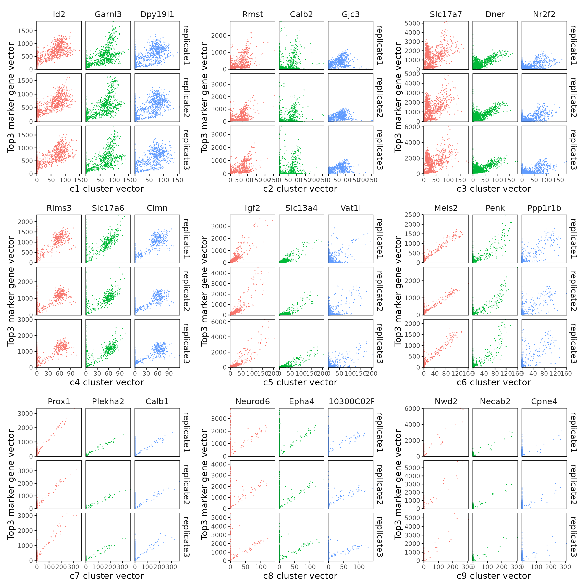
Marker gene summary per cluster
For each cluster, we summarized the detected marker genes and their corresponding strengths. We list genes with model coefficients above the defined cutoff (e.g. 0.1) for each cluster.
Cluster c1 shows enrichment for Id2, Lamp5, and Cplx3, consistent with VIP/LAMP5 interneurons, though some mixed excitatory markers suggest partial transcriptional overlap. Cluster c2 expresses Opalin, Gjc3, and Sox10, clearly corresponding to myelinating oligodendrocytes (MOL). Cluster c3 (Bhlhe22, Hpcal1, Nr2f2) matches IT-L2/3 excitatory neurons, while cluster c4 (Slc17a6, Foxp2, Ntsr2) represents layer 6 corticothalamic (L6 CT-like) neurons. Cluster c5 is dominated by Igf2, Gfap, and Aqp4, marking choroid plexus and glial-enriched regions with broad non-neuronal signatures. Cluster c6 (Ppp1r1b, Gad1, Penk) fits medium spiny neurons (MSNs) of GABAergic lineage. Cluster c7 (Prox1, Calb1) corresponds to dentate gyrus granule cells, whereas cluster c8 (Neurod6, Wfs1, Shisa6) identifies deep-layer IT-L6/CC projection neurons. Finally, c9 shows Chat, Sncg, and Syt6, consistent with ChAT⁺/SNCG⁺ interneurons.
## linear modelling
output_data <- do.call(rbind, lapply(cluster_names, function(cl) {
subset <- jazzPanda_res[jazzPanda_res$top_cluster == cl, ]
sorted_subset <- subset[order(-subset$glm_coef), ]
if (length(sorted_subset) == 0){
return(data.frame(Cluster = cl, Genes = " "))
}
if (cl != "NoSig"){
gene_list <- paste(sorted_subset$gene, "(", round(sorted_subset$glm_coef, 2), ")", sep="", collapse=", ")
}else{
gene_list <- paste(sorted_subset$gene, "", sep="", collapse=", ")
}
return(data.frame(Cluster = cl, Genes = gene_list))
}))
knitr::kable(
output_data,
caption = "Detected marker genes for each cluster by linear modelling approach in jazzPanda, in decreasing value of glm coefficients"
)| Cluster | Genes |
|---|---|
| c1 | Id2(7.78), Garnl3(7.63), Dpy19l1(7.18), Lamp5(6.47), Nrep(5.23), Plcxd2(4.59), Fhod3(4.5), Gfra2(4.31), Satb2(4.28), Bhlhe40(4.14), Kcnh5(4.12), Rasgrf2(3.51), Cux2(3.31), Tmem132d(3.18), Tle4(3.08), Pvalb(2.98), Hs3st2(2.35), Grik3(2.34), Neto2(2.29), Nxph3(2.24), Gng12(2.1), Slit2(2.07), Igfbp6(1.99), Rab3b(1.91), Pdzrn3(1.75), Myl4(1.7), Fezf2(1.69), Syndig1(1.64), Igsf21(1.51), Ndst3(1.47), Sema3a(1.38), Cdh6(1.37), Myo16(1.27), Gsg1l(1.26), Cntnap4(1.22), Lypd6(1.11), Gadd45a(1.06), Syt2(1.06), Cplx3(0.98), Galnt14(0.97), Rspo1(0.95), Ccn2(0.94), Prr16(0.92), Cbln4(0.87), Arhgap25(0.86), Rxfp1(0.73), Col19a1(0.73), Rbp4(0.62), Rspo2(0.55), Laptm5(0.54), Fos(0.46), Sema5b(0.43), Vip(0.43), Trem2(0.42), Siglech(0.39), Cwh43(0.35), Kcnmb2(0.33), Trbc2(0.31), Gm19410(0.29), Sla(0.28), Cort(0.27), Gli3(0.26), Sst(0.26), Crh(0.21) |
| c2 | Rmst(5.92), Calb2(4.49), Gjc3(4.06), Opalin(2.34), Tmem255a(2.12), Zfp536(1.89), Sox10(1.88), Chrm2(1.23), Nts(1.15), Ebf3(1.07), Adamts2(0.61), Gpr17(0.43), Stard5(0.36), Sema3d(0.31), Chodl(0.22) |
| c3 | Slc17a7(21.79), Dner(13.69), Nr2f2(7.96), Bhlhe22(7.25), Hpcal1(5.23), Rprm(4.15), Cdh13(4.12), Kctd12(3.99), Arhgef28(2.83), Plcxd3(2.79), Cdh4(2.28), Bdnf(2), Cdh9(1.66), Parm1(1.52), Dpyd(1.33), Npy2r(1.29), Syt17(1.28), Zfpm2(1.26), Pde11a(0.98), Ndst4(0.92), Hapln1(0.64), Pcsk5(0.58), Angpt1(0.56), Cspg4(0.48), Prss35(0.21) |
| c4 | Rims3(17.98), Slc17a6(17.67), Clmn(15.71), Nrn1(13.7), Rorb(6.91), Nell1(6.48), Necab1(6.42), Acsbg1(5.48), Rnf152(5.36), Car4(5.13), Tanc1(4.81), Tmem163(4.78), Sema6a(4.4), Ntsr2(3.85), Foxp2(3.76), Inpp4b(2.77), Unc13c(2.55), Opn3(2.25), Btbd11(2.13), Cntn6(1.95), Sdk2(1.75), Tox(1.7), Cdh20(1.67), Ly6a(1.51), Fign(1.42), Plch1(1.29), Cntnap5b(1.07), Vwc2l(0.99), Rfx4(0.97), Cbln1(0.94), Cldn5(0.87), Igf1(0.74), Adgrl4(0.66), Deptor(0.59), Pkib(0.39), Pglyrp1(0.33), Nostrin(0.19), Zfp366(0.13) |
| c5 | Igf2(20.4), Slc13a4(9.35), Vat1l(8.41), Gfap(6.1), Mapk4(5.54), Dcn(5.36), Slc39a12(4.66), Strip2(4.13), Pdgfra(3.45), Aqp4(2.87), Fn1(2.72), Cobll1(2.63), Cd24a(2.55), Aldh1a2(2.54), Fmod(2.54), Col1a1(2.41), Acta2(2.28), Spag16(2.18), Lyz2(2.08), Spp1(1.93), Kdr(1.86), Hat1(1.77), Gjb2(1.61), Sntb1(1.31), Paqr5(1.2), Cyp1b1(1.19), Pecam1(1.08), Adamtsl1(1.04), Mecom(0.96), Emcn(0.86), Acvrl1(0.72), Trp73(0.62), Cd93(0.62), Carmn(0.6), Prph(0.59), Eya4(0.43), Pln(0.37), Cd68(0.34), Cd53(0.33), Cd44(0.32), Fgd5(0.3), Sox17(0.23), Slfn5(0.23), Pthlh(0.21) |
| c6 | Meis2(12.44), Penk(11.51), Ppp1r1b(10.21), Gad1(7.38), Pde7b(5.67), Gad2(5.64), Sox11(3.4), Col6a1(3.36), Cacna2d2(2.31), Htr1f(1.77), Pdyn(1.69), Arhgap6(1.05) |
| c7 | Prox1(10.76), Plekha2(4.82), Calb1(4.73), Prdm8(4.02), Igfbp5(3.58), Rasl10a(3.05), Pdzd2(2.44), Slc44a5(2.37), Orai2(1.52), Npnt(1.45) |
| c8 | Neurod6(20.59), Epha4(17.96), 2010300C02Rik(14.76), Dkk3(12.47), Cabp7(10.94), Gm2115(9.87), Arc(8.95), Wfs1(8.56), Bcl11b(8.27), Cpne6(8.26), Sipa1l3(7.74), Pou3f1(7.56), Igfbp4(6.83), Sema3e(6.53), Arhgap12(6.25), Pip5k1b(6), Trpc4(4), Fibcd1(3.98), Sorcs3(3.89), Mdga1(3.49), Shisa6(3.35), Cpne8(3.07), Ror1(0.83) |
| c9 | Nwd2(19.13), Necab2(10.2), Cpne4(8.47), Gucy1a1(7.32), Syt6(6.99), Nrp2(6.24), Thsd7a(4.39), Sncg(2.87), Kctd8(2.57), Chat(1.59), Ano1(1.22), Tacr1(1.05) |
Nosig genes
These five genes (Cd300c2, Ikzf1, Slc6a3, Spi1, and Th) show low or spatially restricted expression across replicates. Their known biology suggests that most are associated with immune or dopaminergic lineages, which are not well represented among the nine annotated cortical and hippocampal cell types. The weak and patchy expression patterns observed here are therefore expected, and it is reasonable that our method did not identify them as cluster-defining marker genes.
cl="NoSig"
inters=jazzPanda_res[jazzPanda_res$top_cluster==cl,"gene"]
all_trans = as.data.frame(matrix(0, ncol=4))
colnames(all_trans) = c("x","y", "feature_name","sample")
for (rp in c("rep1","rep2","rep3")){
rp_lst = get(rp)
iters_sp1= rp_lst$trans_info$feature_name %in% inters
vis_r1 =rp_lst$trans_info[iters_sp1,
c("x","y","feature_name")]
vis_r1$sample=paste("replicate", substr(rp,start = 4, stop=4),sep="")
all_trans = rbind(all_trans,vis_r1)
}
all_trans = all_trans[2:nrow(all_trans),]
genes_plt<- ggplot(data = all_trans,
aes(x = x, y = y))+
geom_point(size=0.001, alpha=0.5)+
facet_grid(sample~feature_name)+
scale_x_reverse()+
guides(fill = guide_colorbar(barwidth = unit(15, "cm"),
height= unit(15, "cm")))+
defined_theme+ theme(legend.position = "bottom",
strip.background = element_rect(fill = "white",
colour = "black"),
strip.text = element_text(size = rel(1.2)),
legend.key.width = unit(2, "cm"),
legend.title = element_text(size = 10),
legend.text = element_text(size = 10),
legend.key.height = unit(2, "cm"))
genes_plt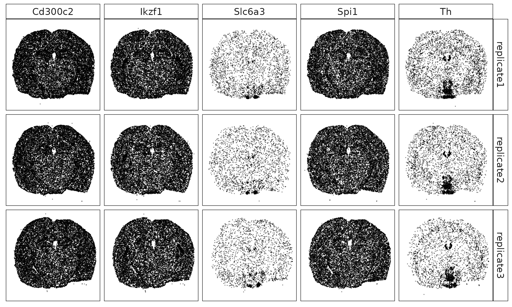
Wilcoxon Rank Sum Test
The FindAllMarkers function applies a Wilcoxon Rank Sum
test to detect genes with cluster-specific expression shifts. Only
positive markers (upregulated genes) were retained using a log
fold-change threshold of 0.1
seu = readRDS(here(gdata,paste0(data_nm, "_seu.Rds")))
rownames(cluster_info) <- cluster_info$cell_id
# Reorder clusters$cluster to match Seurat cells
Idents(seu) <- cluster_info$cluster[match(colnames(seu), rownames(cluster_info))]
find_markers_result <- FindAllMarkers(seu, only.pos = TRUE,
logfc.threshold = 0.1)
table(find_markers_result$cluster)
saveRDS(find_markers_result, here(gdata,paste0(data_nm, "_seu_markers.Rds")))FM_result= readRDS(here(gdata,paste0(data_nm, "_seu_markers.Rds")))
FM_result = FM_result[FM_result$avg_log2FC>0.1, ]
table(FM_result$cluster)
c3 c6 c1 c2 c5 c4 c8 c9 c7
96 64 99 96 79 71 49 50 58 FM_result$cluster <- factor(FM_result$cluster,
levels = cluster_names)
top_mg <- FM_result %>%
group_by(cluster) %>%
arrange(desc(avg_log2FC), .by_group = TRUE) %>%
slice_max(order_by = avg_log2FC, n = 10) %>%
select(cluster, gene, avg_log2FC)
p1<-DotPlot(seu, features = unique(top_mg$gene)) +
scale_colour_gradient(low = "white", high = "red") +
coord_flip()+
theme(axis.text.x = element_text(angle = 45, hjust = 1, vjust = 1))+
labs(title = "Top 10 marker genes (WRS)", x="", y="")
p1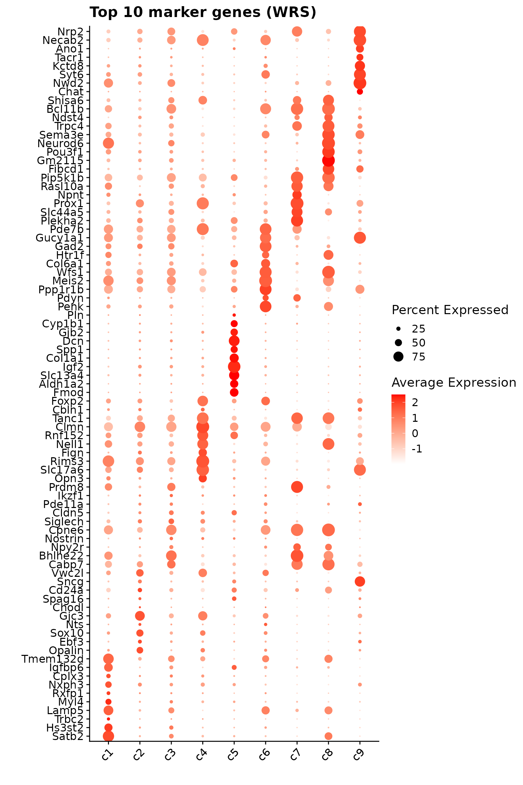
limma
We applied the limma framework to identify differentially expressed marker genes across clusters in the healthy liver sample. Count data were normalized using log-transformed counts from the speckle package. A linear model was fitted for each gene with cluster identity as the design factor, and pairwise contrasts were constructed to compare each cluster against all others. Empirical Bayes moderation was applied to stabilize variance estimates, and significant genes were determined using the moderated t-statistics from eBayes.
all.bct <- factor(cluster_info$cluster)
sample <- spe_joint$sample_id
y <- DGEList(cbind(cm1, cm2, cm3))
y$genes <-row.names(rep1$cm)
logcounts.all <- normCounts(y,log=TRUE,prior.count=0.1)
design <- model.matrix(~0+all.bct+sample)
colnames(design)[1:(length(levels(all.bct)))] <- levels(all.bct)
mycont <- matrix(0,ncol=length(levels(all.bct)),nrow=length(levels(all.bct)))
colnames(mycont)<-levels(all.bct)
diag(mycont)<-1
mycont[upper.tri(mycont)]<- -1/(length(levels(all.bct))-1)
mycont[lower.tri(mycont)]<- -1/(length(levels(all.bct))-1)
# Fill out remaining rows with 0s
zero.rows <- matrix(0,ncol=length(levels(all.bct)),nrow=(ncol(design)-length(levels(all.bct))))
test <- rbind(mycont,zero.rows)
fit <- lmFit(logcounts.all,design)
fit.cont <- contrasts.fit(fit,contrasts=test)
fit.cont <- eBayes(fit.cont,trend=TRUE,robust=TRUE)
fit.cont$genes <-row.names(rep1$cm)
limma_dt <- decideTests(fit.cont)
saveRDS(fit.cont, here(gdata,paste0(data_nm, "_fit_cont_obj.Rds")))fit.cont = readRDS(here(gdata,paste0(data_nm, "_fit_cont_obj.Rds")))
limma_dt <- decideTests(fit.cont)
summary(limma_dt) c1 c2 c3 c4 c5 c6 c7 c8 c9
Down 117 120 85 119 157 145 189 181 187
NotSig 3 11 10 6 5 8 1 6 3
Up 128 117 153 123 86 95 58 61 58top_markers <- lapply(cluster_names, function(cl) {
tt <- topTable(fit.cont,
coef = cl,
number = Inf,
adjust.method = "BH",
sort.by = "P")
tt <- tt[order(tt$adj.P.Val, -abs(tt$logFC)), ] # tie-break by logFC
tt$contrast <- cl
tt$gene <- rownames(tt)
head(tt, 10) # top 10
})
# Combine into one data.frame
top_markers_df <- bind_rows(top_markers) %>%
select(contrast, gene, logFC, adj.P.Val)
p1<- DotPlot(seu, features = unique(top_markers_df$gene)) +
scale_colour_gradient(low = "white", high = "red") +
coord_flip()+
theme(axis.text.x = element_text(angle = 45, hjust = 1, vjust = 1))+
labs(title = "Top 10 marker genes (limma)", x="", y="")
p1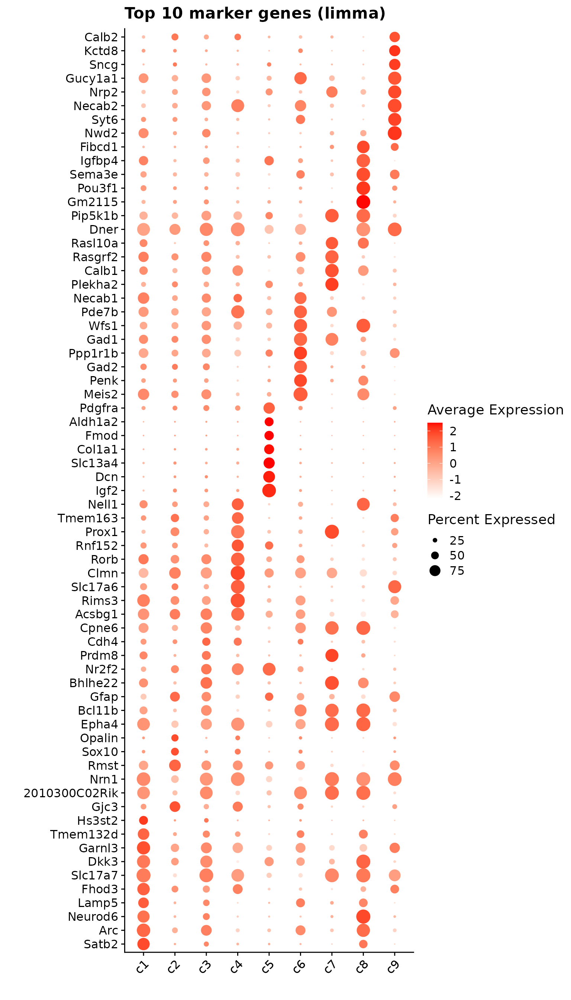
Comparison of marker gene detection methods
Cumulative rank plot
We compared the performance of different marker detection methods — jazzPanda (linear modelling), limma, and Seurat’s Wilcoxon Rank Sum test — by evaluating the cumulative average spatial correlation between ranked marker genes and their corresponding target clusters at the spatial vector level.
We can see that the linear modelling approach prioritizes highly correlated marker genes more effectively than the other two methods.
plot_lst=list()
cor1 <- cor(sv_lst$gene_mt[1:2500, ],
sv_lst$cluster_mt[1:2500, cluster_names], method = "spearman")
cor2 <- cor(sv_lst$gene_mt[2500:5000, ],
sv_lst$cluster_mt[2500:5000, cluster_names], method = "spearman")
cor3 <- cor(sv_lst$gene_mt[5000:7500, ],
sv_lst$cluster_mt[5000:7500, cluster_names], method = "spearman")
cor_M <-(cor1 + cor2 + cor3) / 3
Idents(seu)=cluster_info$cluster[match(colnames(seu), cluster_info$cell_id)]
for (cl in cluster_names){
fm_cl=FindMarkers(seu, ident.1 = cl, only.pos = TRUE,
logfc.threshold = 0.1)
fm_cl = fm_cl[fm_cl$p_val_adj<0.05, ]
fm_cl = fm_cl[order(fm_cl$avg_log2FC, decreasing = TRUE),]
to_plot_fm =row.names(fm_cl)
limma_cl<-topTable(fit.cont,coef=cl,p.value = 0.05, n=Inf, sort.by = "p")
limma_cl = limma_cl[limma_cl$logFC>0, ]
to_plot_lm = row.names(limma_cl)
lasso_sig = jazzPanda_res[jazzPanda_res$top_cluster==cl,]
lasso_sig = lasso_sig[order(lasso_sig$glm_coef, decreasing = TRUE),]
FM_pt = data.frame("name"=to_plot_fm,"rk"= 1:length(to_plot_fm),
"y"= get_cmr_ma(to_plot_fm,cor_M = cor_M, cl = cl),
"type"="Wilcoxon Rank Sum Test")
lasso_pt = data.frame("name"=lasso_sig$gene,"rk"= 1:nrow(lasso_sig),
"y"= get_cmr_ma(lasso_sig$gene,cor_M = cor_M, cl = cl),
"type"="jazzPanda-glm")
limma_pt = data.frame("name"=to_plot_lm,"rk"= 1:length(to_plot_lm),
"y"= get_cmr_ma(to_plot_lm,cor_M = cor_M, cl = cl),
"type"="limma")
data_lst = rbind(limma_pt, lasso_pt,FM_pt)
data_lst$type <- factor(
data_lst$type,
levels = c("jazzPanda-glm", "limma", "Wilcoxon Rank Sum Test")
)
data_lst$rk = as.numeric(data_lst$rk)
p <-ggplot(data_lst, aes(x = rk, y = y, color = type)) +
geom_step(size = 0.8) + # type = "s"
scale_color_manual(values = c("jazzPanda-glm" = "red",
"limma" = "black",
"Wilcoxon Rank Sum Test" = "blue")) +
labs(title = paste0("Cluster: ", cl), x = "Rank of marker genes",
y = "Cumulative average correlation",
color = NULL) +
scale_x_continuous(limits = c(0, 50))+
theme_classic(base_size = 12) +
theme(plot.title = element_text(hjust = 0.5),
axis.line = element_blank(),
panel.border = element_rect(color = "black",
fill = NA, linewidth = 1),
legend.position = "inside",
legend.position.inside = c(0.98, 0.02),
legend.justification = c("right", "bottom"),
legend.background = element_rect(color = "black",
fill = "white", linewidth = 0.5),
legend.box.background = element_rect(color = "black",
linewidth = 0.5)
)
plot_lst[[cl]] <- p
}
combined_plot <- wrap_plots(plot_lst, ncol = 3)
combined_plot 
Upset plot
We further visualized the overlap between marker genes detected by the four methods using UpSet plots for each cluster. While limma and the Wilcoxon rank-sum test detect a larger number of marker genes, many of these lack clear spatial relevance. In contrast, our method identifies a more refined and spatially coherent set of markers that align closely with cluster boundaries. The moderate overlaps with non-spatial methods suggest that our approach captures the most spatially informative gene.
plot_lst=list()
for (cl in cluster_names){
findM_sig <- FM_result[FM_result$cluster==cl & FM_result$p_val_adj<0.05,"gene"]
limma_sig <- row.names(limma_dt[limma_dt[,cl]==1,])
lasso_cl <- jazzPanda_res[jazzPanda_res$top_cluster==cl, "gene"]
df_mt <- as.data.frame(matrix(FALSE,nrow=nrow(jazzPanda_res),ncol=3))
row.names(df_mt) <- jazzPanda_res$gene
colnames(df_mt) <- c("jazzPanda-glm",
"Wilcoxon Rank Sum Test","limma")
df_mt[findM_sig,"Wilcoxon Rank Sum Test"] <- TRUE
df_mt[limma_sig,"limma"] <- TRUE
df_mt[lasso_cl,"jazzPanda-glm"] <- TRUE
df_mt$gene_name <- row.names(df_mt)
p = upset(df_mt,
intersect=c("Wilcoxon Rank Sum Test", "limma",
"jazzPanda-glm"),
wrap=TRUE, keep_empty_groups= FALSE, name="",
#themes=theme_grey(),
stripes='white',
sort_intersections_by ="cardinality", sort_sets= FALSE,min_degree=1,
set_sizes =(
upset_set_size()
+ theme(axis.title= element_blank(),
axis.ticks.y = element_blank(),
axis.text.y = element_blank())),
sort_intersections= "descending", warn_when_converting=FALSE,
warn_when_dropping_groups=TRUE,encode_sets=TRUE,
width_ratio=0.3, height_ratio=1/4)+
ggtitle(paste0("Cluster: ", cl))+
theme(plot.title = element_text( size=15))
plot_lst[[cl]] <- p
}
combined_plot <- wrap_plots(plot_lst, ncol = 3)
combined_plot 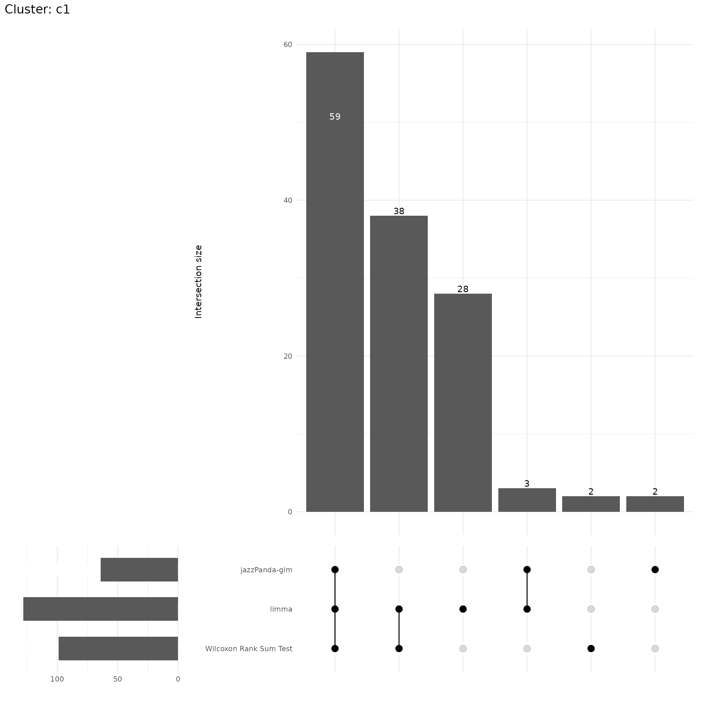
Annotate cell type with top marker genes
anno_df <- data.frame(
cluster = cluster_names,
major_class = c(
"Inhibitory neuron",
"Oligodendrocyte lineage",
"Excitatory neuron",
"Excitatory neuron",
"Non-neuronal (barrier/stromal mix)",
"Inhibitory projection neuron",
"Excitatory neuron",
"Excitatory neuron",
"Cholinergic neuron"
),
sub_class = c(
"L2/3 LAMP5/VIP interneuron",
"Mature oligodendrocyte (myelinating)",
"IT L2/3",
"Corticothalamic-like",
"Choroid plexus & vascular/stromal admixture",
"Striatal medium spiny neuron (MSN)",
"Dentate gyrus granule",
"IT L6 corticocortical (Neurod6+)",
"Cortical/striatal cholinergic interneuron"
),
cell_type = c(
"VIP/LAMP5 (CPLX3+, ID2+)",
"MOL (Opalin+/Gjc3+/Sox10+)",
"IT-L2/3 (BHLHE22+/HPcal1+)",
"L6 CT-like (FOXP2+/NTSR2+/VGlut2+)",
"Choroid plexus epithelium–enriched",
"MSN (DARPP-32+, GABAergic)",
"DG granule (Prox1+/Calb1+)",
"IT-L6/CC (Neurod6+/Wfs1+/Shisa6+)",
"ChAT+/SNCG+ interneuron"
),
supporting_genes = c(
"JP: Id2, Lamp5, Vip, Cplx3, Crh, Cort; FM: Lamp5, Vip, Cplx3, Satb2",
"JP: Opalin, Gjc3, Sox10; FM: Opalin, Sox10, Gjc3, Spag16",
"JP: Slc17a7, Bhlhe22, Hpcal1, Cdh13; FM: Cabp7, Bhlhe22, Syt17",
"JP: Slc17a6, Foxp2, Ntsr2, Rims3; FM: Slc17a6, Foxp2, Rims3",
"JP: Igf2, Slc13a4, Kdr, Pecam1, Emcn, Col1a1, Acta2; FM: Fmod, Aldh1a2, Igf2, Col1a1, Spp1",
"JP: Ppp1r1b, Gad1/2, Penk, Pdyn, Meis2; FM: Penk, Pdyn, Ppp1r1b, Gad2",
"JP: Prox1, Calb1, Prdm8; FM: Prox1, Calb1",
"JP: Neurod6, Wfs1, Shisa6, Igfbp4; FM: Neurod6, Pou3f1, Shisa6, Wfs1",
"JP: Chat, Sncg, Syt6; FM: Chat, Sncg, Tacr1, Kctd8"
),
notes = c(
"Robust LAMP5/VIP signal (Id2/Lamp5/Cplx3). SATB2/CUX2 likely ambient; minor immune genes likely contamination.",
"Opalin+Gjc3+Sox10 define mature oligos; low Gpr17 argues against OPC.",
"Slc17a7+ with IT adhesion/signaling genes; endothelial/immune hits in FM likely contaminants.",
"Foxp2+Ntsr2+ with Slc17a6 (VGlut2) suggest L6 corticothalamic-like; some L4/5 IT (Rorb) admixture.",
"Strong CP markers (Igf2, Slc13a4) with endothelial/smc/fibro mix → perivascular/meningeal CP neighborhood; ependymal Trp73 low.",
"Classic MSN signature (DARPP-32 + Gad1/2 + Penk/Pdyn); indicates striatal tissue present.",
"Prox1 hallmark of DG granule; Calb1 supportive.",
"Canonical Neurod6 IT-L6 corticocortical program; small PT marker bleed-through possible.",
"Clear ChAT/SNCG cholinergic identity; Syt6 hints at small L6 CT admixture."
),
anno_name=c(
"Inh_L23_LAMP5_VIP",
"Oligo_Mature_MOL",
"Exc_L23_IT",
"Exc_L6_CTlike",
"NonNeur_CP_VascStromal",
"Inh_Striatal_MSN",
"Exc_DG_Granule",
"Exc_L6_IT_CC",
"Cholin_ChAT_SNCG"),
confidence = c(
"Medium-High",
"High",
"Medium",
"Medium",
"Medium-Low",
"High",
"High",
"Medium-High",
"High"
),
stringsAsFactors = FALSE
)
anno_df cluster major_class
1 c1 Inhibitory neuron
2 c2 Oligodendrocyte lineage
3 c3 Excitatory neuron
4 c4 Excitatory neuron
5 c5 Non-neuronal (barrier/stromal mix)
6 c6 Inhibitory projection neuron
7 c7 Excitatory neuron
8 c8 Excitatory neuron
9 c9 Cholinergic neuron
sub_class
1 L2/3 LAMP5/VIP interneuron
2 Mature oligodendrocyte (myelinating)
3 IT L2/3
4 Corticothalamic-like
5 Choroid plexus & vascular/stromal admixture
6 Striatal medium spiny neuron (MSN)
7 Dentate gyrus granule
8 IT L6 corticocortical (Neurod6+)
9 Cortical/striatal cholinergic interneuron
cell_type
1 VIP/LAMP5 (CPLX3+, ID2+)
2 MOL (Opalin+/Gjc3+/Sox10+)
3 IT-L2/3 (BHLHE22+/HPcal1+)
4 L6 CT-like (FOXP2+/NTSR2+/VGlut2+)
5 Choroid plexus epithelium–enriched
6 MSN (DARPP-32+, GABAergic)
7 DG granule (Prox1+/Calb1+)
8 IT-L6/CC (Neurod6+/Wfs1+/Shisa6+)
9 ChAT+/SNCG+ interneuron
supporting_genes
1 JP: Id2, Lamp5, Vip, Cplx3, Crh, Cort; FM: Lamp5, Vip, Cplx3, Satb2
2 JP: Opalin, Gjc3, Sox10; FM: Opalin, Sox10, Gjc3, Spag16
3 JP: Slc17a7, Bhlhe22, Hpcal1, Cdh13; FM: Cabp7, Bhlhe22, Syt17
4 JP: Slc17a6, Foxp2, Ntsr2, Rims3; FM: Slc17a6, Foxp2, Rims3
5 JP: Igf2, Slc13a4, Kdr, Pecam1, Emcn, Col1a1, Acta2; FM: Fmod, Aldh1a2, Igf2, Col1a1, Spp1
6 JP: Ppp1r1b, Gad1/2, Penk, Pdyn, Meis2; FM: Penk, Pdyn, Ppp1r1b, Gad2
7 JP: Prox1, Calb1, Prdm8; FM: Prox1, Calb1
8 JP: Neurod6, Wfs1, Shisa6, Igfbp4; FM: Neurod6, Pou3f1, Shisa6, Wfs1
9 JP: Chat, Sncg, Syt6; FM: Chat, Sncg, Tacr1, Kctd8
notes
1 Robust LAMP5/VIP signal (Id2/Lamp5/Cplx3). SATB2/CUX2 likely ambient; minor immune genes likely contamination.
2 Opalin+Gjc3+Sox10 define mature oligos; low Gpr17 argues against OPC.
3 Slc17a7+ with IT adhesion/signaling genes; endothelial/immune hits in FM likely contaminants.
4 Foxp2+Ntsr2+ with Slc17a6 (VGlut2) suggest L6 corticothalamic-like; some L4/5 IT (Rorb) admixture.
5 Strong CP markers (Igf2, Slc13a4) with endothelial/smc/fibro mix → perivascular/meningeal CP neighborhood; ependymal Trp73 low.
6 Classic MSN signature (DARPP-32 + Gad1/2 + Penk/Pdyn); indicates striatal tissue present.
7 Prox1 hallmark of DG granule; Calb1 supportive.
8 Canonical Neurod6 IT-L6 corticocortical program; small PT marker bleed-through possible.
9 Clear ChAT/SNCG cholinergic identity; Syt6 hints at small L6 CT admixture.
anno_name confidence
1 Inh_L23_LAMP5_VIP Medium-High
2 Oligo_Mature_MOL High
3 Exc_L23_IT Medium
4 Exc_L6_CTlike Medium
5 NonNeur_CP_VascStromal Medium-Low
6 Inh_Striatal_MSN High
7 Exc_DG_Granule High
8 Exc_L6_IT_CC Medium-High
9 Cholin_ChAT_SNCG HighsessionInfo()R version 4.5.1 (2025-06-13)
Platform: x86_64-pc-linux-gnu
Running under: Red Hat Enterprise Linux 9.3 (Plow)
Matrix products: default
BLAS: /stornext/System/data/software/rhel/9/base/tools/R/4.5.1/lib64/R/lib/libRblas.so
LAPACK: /stornext/System/data/software/rhel/9/base/tools/R/4.5.1/lib64/R/lib/libRlapack.so; LAPACK version 3.12.1
locale:
[1] LC_CTYPE=en_AU.UTF-8 LC_NUMERIC=C
[3] LC_TIME=en_AU.UTF-8 LC_COLLATE=en_AU.UTF-8
[5] LC_MONETARY=en_AU.UTF-8 LC_MESSAGES=en_AU.UTF-8
[7] LC_PAPER=en_AU.UTF-8 LC_NAME=C
[9] LC_ADDRESS=C LC_TELEPHONE=C
[11] LC_MEASUREMENT=en_AU.UTF-8 LC_IDENTIFICATION=C
time zone: Australia/Melbourne
tzcode source: system (glibc)
attached base packages:
[1] grid stats4 stats graphics grDevices utils datasets
[8] methods base
other attached packages:
[1] harmony_1.2.3 Rcpp_1.1.0
[3] Banksy_1.4.0 dotenv_1.0.3
[5] here_1.0.1 xtable_1.8-4
[7] clustree_0.5.1 ggraph_2.2.1
[9] speckle_1.8.0 edgeR_4.6.3
[11] limma_3.64.1 ggvenn_0.1.10
[13] RColorBrewer_1.1-3 patchwork_1.3.1
[15] gridExtra_2.3 corrplot_0.95
[17] ComplexUpset_1.3.3 caret_7.0-1
[19] lattice_0.22-7 glmnet_4.1-10
[21] Matrix_1.7-3 dplyr_1.1.4
[23] data.table_1.17.8 ggplot2_3.5.2
[25] Seurat_5.3.0 SeuratObject_5.1.0
[27] sp_2.2-0 SpatialExperiment_1.18.1
[29] SingleCellExperiment_1.30.1 SummarizedExperiment_1.38.1
[31] Biobase_2.68.0 GenomicRanges_1.60.0
[33] GenomeInfoDb_1.44.2 IRanges_2.42.0
[35] S4Vectors_0.46.0 BiocGenerics_0.54.0
[37] generics_0.1.4 MatrixGenerics_1.20.0
[39] matrixStats_1.5.0 jazzPanda_0.2.4
[41] spatstat_3.4-0 spatstat.linnet_3.3-1
[43] spatstat.model_3.4-0 rpart_4.1.24
[45] spatstat.explore_3.5-2 nlme_3.1-168
[47] spatstat.random_3.4-1 spatstat.geom_3.5-0
[49] spatstat.univar_3.1-4 spatstat.data_3.1-8
loaded via a namespace (and not attached):
[1] spatstat.sparse_3.1-0 lubridate_1.9.4 httr_1.4.7
[4] tools_4.5.1 sctransform_0.4.2 R6_2.6.1
[7] lazyeval_0.2.2 uwot_0.2.3 mgcv_1.9-3
[10] withr_3.0.2 progressr_0.15.1 cli_3.6.5
[13] textshaping_1.0.1 fastDummies_1.7.5 labeling_0.4.3
[16] sass_0.4.10 ggridges_0.5.6 pbapply_1.7-4
[19] systemfonts_1.3.1 dbscan_1.2.2 R.utils_2.13.0
[22] aricode_1.0.3 parallelly_1.45.1 shape_1.4.6.1
[25] ica_1.0-3 abind_1.4-8 R.methodsS3_1.8.2
[28] lifecycle_1.0.4 yaml_2.3.10 recipes_1.3.1
[31] SparseArray_1.8.1 Rtsne_0.17 promises_1.3.3
[34] crayon_1.5.3 miniUI_0.1.2 cowplot_1.2.0
[37] magick_2.8.7 pillar_1.11.0 knitr_1.50
[40] rjson_0.2.23 future.apply_1.20.0 codetools_0.2-20
[43] glue_1.8.0 vctrs_0.6.5 png_0.1-8
[46] spam_2.11-1 gtable_0.3.6 cachem_1.1.0
[49] gower_1.0.2 xfun_0.52 S4Arrays_1.8.1
[52] mime_0.13 prodlim_2025.04.28 tidygraph_1.3.1
[55] survival_3.8-3 timeDate_4041.110 RcppHungarian_0.3
[58] iterators_1.0.14 hardhat_1.4.2 lava_1.8.1
[61] statmod_1.5.0 fitdistrplus_1.2-4 ROCR_1.0-11
[64] ipred_0.9-15 bit64_4.6.0-1 RcppAnnoy_0.0.22
[67] BumpyMatrix_1.16.0 rprojroot_2.1.0 bslib_0.9.0
[70] irlba_2.3.5.1 KernSmooth_2.23-26 colorspace_2.1-1
[73] nnet_7.3-20 tidyselect_1.2.1 bit_4.6.0
[76] compiler_4.5.1 DelayedArray_0.34.1 plotly_4.11.0
[79] scales_1.4.0 hexbin_1.28.5 lmtest_0.9-40
[82] stringr_1.5.1 digest_0.6.37 goftest_1.2-3
[85] presto_1.0.0 spatstat.utils_3.1-5 rmarkdown_2.29
[88] XVector_0.48.0 htmltools_0.5.8.1 pkgconfig_2.0.3
[91] fastmap_1.2.0 rlang_1.1.6 htmlwidgets_1.6.4
[94] UCSC.utils_1.4.0 shiny_1.11.1 farver_2.1.2
[97] jquerylib_0.1.4 zoo_1.8-14 jsonlite_2.0.0
[100] BiocParallel_1.42.1 mclust_6.1.1 ModelMetrics_1.2.2.2
[103] R.oo_1.27.1 magrittr_2.0.3 GenomeInfoDbData_1.2.14
[106] dotCall64_1.2 viridis_0.6.5 reticulate_1.43.0
[109] leidenAlg_1.1.5 stringi_1.8.7 pROC_1.19.0.1
[112] MASS_7.3-65 plyr_1.8.9 parallel_4.5.1
[115] listenv_0.9.1 ggrepel_0.9.6 deldir_2.0-4
[118] graphlayouts_1.2.2 sccore_1.0.6 splines_4.5.1
[121] tensor_1.5.1 locfit_1.5-9.12 igraph_2.1.4
[124] RcppHNSW_0.6.0 reshape2_1.4.4 evaluate_1.0.4
[127] foreach_1.5.2 tweenr_2.0.3 httpuv_1.6.16
[130] RANN_2.6.2 tidyr_1.3.1 purrr_1.1.0
[133] polyclip_1.10-7 future_1.67.0 scattermore_1.2
[136] ggforce_0.5.0 RSpectra_0.16-2 later_1.4.2
[139] viridisLite_0.4.2 class_7.3-23 ragg_1.5.0
[142] tibble_3.3.0 memoise_2.0.1 cluster_2.1.8.1
[145] timechange_0.3.0 globals_0.18.0